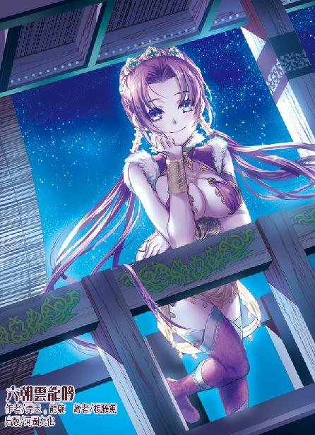

第67集·羽林天军
汉国篇（19/28）
出版日期：2016-11-24
【本集内容简介】
螳螂捕蝉，黄雀在后，在这场汉宫剧变之中，人人都想当最后的黄雀。但，谁又知道自己会不会是为人作嫁的傻子？
一直没有露面的吕巨君，领着一支兽蛮奇兵和左武第二军，扭转了吕氏的颓势，却没想到，此举将成为长秋宫争取友军的突破口！
剑玉姬找上程宗扬结盟共抗吕氏，长秋宫的外援也将要进宫，此时，大太监蔡敬仲突然表示：“我要自焚！”
※ ※ ※ ※ ※

封面人物：小紫
一滴水珠悬在铜壶的漏管下方，表面映出一株缩小了无数倍的青铜灯树，细小的灯火犹如繁星，光芒璀璨。片刻后，水珠悄然滑落，滴在盛着刻箭的承水壶中，发出一声轻响。
已经是漏下三刻，虽然四周的帷幕密不透风，永安宫内仍然寒意四起。
吕冀躺在榻上，通红的双眼布满血丝，就像一头受伤的饿狼。
他身上受的都是外伤，并不致命，可这些外伤极为恶心。中行说一共刺了他十七刀，伤口从肩到腿，遍布全身，不管他是躺是坐，都至少会碰到一处。为了镇痛，宫里的太医用上了麻沸散，使他能昏沉睡去，结果造成了这样的局面：吕冀想理事，就无法止痛，想止痛就无法理事，只能眼睁睁看着自己好端端的计划被刘建搅成一团乱麻。甚至那贼子还登基当了天子！是可忍孰不可忍！
“扶我起来！”
张恽道：“大司马，你一身的伤……”
吕冀咆哮道：“我就脚底下没有伤口！”
张恽只好小心翼翼地扶着吕冀起来。
吕冀用力喘了口气，忍痛对许杨道：“告诉巨君，不用再等了！那帮贼子该跳出来的都已经跳出来了，挨个杀过去便是！今晚务必攻下南宫，将逆贼刘建枭首示众！”
张恽小心劝谏道：“刘建已经是瓮中之鳖，何必着急呢？”
“过了今晚，他就做了一日的天子！”吕冀咬牙切齿，恶狠狠说道：“无论如何！不能让他活到明日！”
张恽看了眼低头不语的许杨，躬腰应道：“是。”
“还有刘氏宗亲！”吕冀厉声道：“一个都不许放过！”
帷幕外传来一个冰冷的声音：“荒唐！”
张恽像被人踢了一脚似的，扑通跪倒，额头紧贴着地面。
一只玉手掀开帷帐，义姁展目往幕中扫了一眼，然后退开一步。
帐外环佩轻响，穿着黑色凤衣的太后双手握在胸前，缓步走进帐中，凤目间带着几分愠怒，盯着浑身缠满绷带的吕冀。
即使受伤也不改嚣张本色的襄邑侯此时却嘴巴一扁，像个被人欺负的孩子一样委屈地叫了一声：“阿姐……”然后“呜呜”地哭了起来。
“哭什么！”吕雉怒斥一声，一边从袖中取出一方帕子，替弟弟拭去泪水，一边教训道：“吃了亏，就讨回来！何必作小儿女之态？”
吕冀抽泣着恨恨道：“都是中行说那个狗贼！还有刘建！刘子骏！刘荣！刘箕！刘德……姓刘的就没有一个好东西！”他越说越气，“枉我吕家世代匡扶社稷，为刘氏费尽心力。这帮忘恩负义的东西，全都是贼！”
“少说这等话！”
吕雉呵斥一声，然后叫义姁过来，检查弟弟身上的伤势。
义姁解开绷带，看了几处要紧的伤口，宽慰道：“侯爷伤势平稳，静养月余即可痊愈。”
“哪里等得了月余？”吕雉道：“越快越好，眼下耽误不得。”
义姁心下会意，“奴婢这便取药来。”
等义姁离开，吕雉抬眼看着弟弟，半晌没有作声。
吕冀早就长得比姐姐还高，身材更是肥壮，可在她的目光下，仍像小时候那样，手足无措。
许杨不言声地躬身退下，只有张恽还留在帐内。
吕雉慢慢说道：“冀儿，你告诉阿姐，是不是晴州商会找过你，想拿重金买天子的性命？”
吕冀脸色顿时一僵。
吕雉沉默片刻，然后带着一丝痛心道：“你缺钱吗？”
“不是的……阿姐……”吕冀吞吞吐吐地嗫嚅片刻，然后小声道：“反正是要做的……我应许他们，那钱等于是白拿的……”
“冀儿啊冀儿，你怎么能这么傻啊！”吕雉道：“那帮晴州商蠹最是奸诈狡狠，你答应他们，不就等若告诉了他们你的心思吗？”
吕冀心虚地说道：“我又没有说……”
“他们难道猜不出来吗？莫说你因为贪图那些小利答应了他们，即便你没有答应，只要你稍有意动，他们就能猜出九成。”
吕冀被姐姐接连教训，心里有些不高兴，梗着脖子道：“那又如何？他们只是些商贾而已，一道算缗令就能让他们倾家荡产。”
“你！”
吕雉还待再说。吕冀忽然眉头一紧，一手抚着伤处叫道：“哎哟……”
吕雉气得脸色发青，最后还是没能呵斥出口，转头道：“还愣着干什么！扶大司马躺下！”
张恽连忙上前扶住吕冀，小心避开伤口，用一个别扭的姿势半躺下来。
吕雉胸口起伏片刻，然后冷冰冰道：“我不知道晴州商会许了你多少钱，但你要知晓——晴州商会的人从你府里出来，转头便许了刘建二十万金铢！你自己想想吧。”说罢拂袖而去。
“二十万？”吕冀怔了片刻，抬手往案上拍了一记，大怒道：“这帮坏了心肠的商蠹！哎哟……”
这一拍不小心牵动臂上的伤口，吕冀抱着手臂大叫起来。
“侯爷当心。”义姁拿着一只布囊进来，见状抬手托住吕冀的肘尖，然后指尖一挑，白色的绷带像是活过来一样，灵动地一圈圈旋转着散开。
义姁一手解开绷带，一手从布囊中取出一只玉盒。那玉盒极大，打开来，里面却只有一层浅浅的赤红色药末。义姁用一只精巧的玉圭抿了少许，在吕冀臂上薄薄洒了一层。
吕冀只觉伤口像被太阳晒到一样暖洋洋的，接着便看到伤口以肉眼可见的速度迅速愈合。
“这赤阳散是疗伤生肌的秘药，”义姁道：“可惜只能治皮外伤，伤口太深便无能为力。眼下只剩了这么一点，侯爷，往后可要当心了。”
※ ※ ※ ※ ※
火光冲天，映出夜空中密布的彤云。武库的大火已经烧了一个白天，此时非但没有熄灭，反而越发猛烈，熊熊大火将半个洛都城都笼罩在火光下。似乎被火光惊扰，不知从何处隐约传来野兽的咆哮声，夜色下苍凉而又可怖。
程宗扬两手扶着栏杆，俯首看着脚下的广场。经过一天的殊死搏杀，阿阁广场上每一块砖石上都淌满了鲜血。广场两侧的沟渠中，鲜血汇聚成溪，最深处足以淹没人的脚踝。
如今正值隆冬，那些鲜血此时已凝结成冰，唯有浓郁的血腥气挥之不去。
吕氏与刘建双方杀得天翻地覆，南北二宫血流成河，连武库都一把火烧了，洛都士民人心惶惶。许多人都试图出城躲避战乱，但洛都九座城门此时已经全部戒严，禁止通行。
对于大多数平民而言，他们并不在乎谁登基称帝，毕竟天子之位离他们太过遥远，无论谁登基，也不见得会让他们的日子更好过。但眼下的战乱已经影响到每个人的生计，他们只盼着战乱能早日平息。好在一片混乱之中，董宣兼任的洛都令仍在运作，勉强维持住城中的秩序，暂时没有出现大乱。如今各处里坊都紧闭大门，无数人都在焦灼地等待战争结束。
两军在尺寸之地血战竞日，阿阁数易其手。但吕氏指挥的平叛军始终没能打到南宫核心的崇德殿，刘建军也未能夺回白虎门。双方一直杀到夜间，仍然是僵持的局面，汉军的精锐就在这片广场上白白消耗着生命。
为双方作战的士卒原本同属一军，用着同样的装备，同样的战术，受过同样的训练。就在一天前，他们还是生死与共的手足同袍，现在却成了你死我活的对手。打到这个地步，双方都已经没有任何退路，谁后退一步，都将是万劫不复。胜者会获得一切，而败者将失去一切。对于那些押上身家性命的权贵豪门来说，更是如此。
程宗扬视线从阿阁移向崇德殿，望着那面勉强赶制出来的天子旌旗。
高大的旗面用数匹丝帛拼接而成，颜色深浅不一，正如刘建这个天子之位一样，只能说是凑合。
“刘建的底牌已经出尽了。”程宗扬道：“不然剑玉姬也不会那么赏脸，亲自出面来找我谈心。接下来，就要看他运气够不够好了。”
卢景道：“刘建能在崇德殿登基，气运已经逆天。他要真能当上天子，老天都不会答应。”
“连五哥也不看好那厮？”
“看好他的可不多。”蔡敬仲淡淡道：“我听说，刘建登基时，中行说就没有露面。”
程宗扬一怔，“怎么回事？”
刘建能够登基，中行说居功至伟，可以说没有中行说，就没有刘建今日，可登基大典这么重要的关头，中行说居然没有出现？
“宫里传言，他是跑了。”
“跑了？”程宗扬满脸的不可思议。
吕氏弑君是他先喊出来的，天子遗诏是他宣称的，刘建的野心是他煽动起来的，天子旧臣是他拉拢的，传国玉玺和虎符的所在是他透的底——结果那家伙一把火把汉国朝野烧了个七零八落，然后拍拍屁股就跑了？
汉国宫中有个蔡敬仲已经够不幸了，谁知道还有中行说这种货色？蔡爷是要钱，这孙子可是要命！中行说坑了多少人？他自己是过瘾了，不知道多少人被他害得家破人亡。单是广场上战死的这些军士，一大半都要算到他头上。
弄死这么多人，然后他就跑了？他能跑到哪儿去？别说吕氏，就是刘建也不会放过他。
程宗扬正想得入神，云丹琉飞身掠上阙楼，抬手把一封书信掷给他，冷着脸道：“给你的。”
自从得知外面打得正欢，这个卑鄙之徒还背地里跟几个侍奴在宫里胡搞，云丹琉就没给过他好脸色看。程宗扬私下猜测，云丫头生气多半是因为没叫她——但这话打死他也不敢说。
密道入口在皇后的寝宫，外人不好入内，传递消息都是由几名侍奴负责。宫中虽然杀得血流成河，但有这条密道在，长秋宫始终与外面保持着联系。
书信由秦桧亲笔所写，一手漂亮工整的蝇头小楷，看着就让人舒服。
眼下刘建与吕氏打得不可开交，根本没有人顾得上理会他们，一切都在按计划进行。董宣的两千隶徒和郭解召集的千余游侠儿，都已经准备停当，随时可以出动。
程郑的游说并不十分顺利，但也在预料之中。大多数商贾仍然不敢卷入争夺天子之位的是非之中。而由于吕巨君的操持，赵飞燕在民间的名声更是不堪。听说襄助皇后，许多人都打着哈哈顾左右而言他。但同时大多数商贾也没有表现出对刘建或者吕氏的特别倾向——在他们看来，三者都不是什么好鸟。倒是郭解的名声帮了程郑不小的忙。以田荣为首的一批商贾，出于对郭解的信任解囊相助，也让程郑拉拢了一批人。
信中送来一个好消息，上林苑的羽林天军已经被霍子孟派人控制，总算没有落在吕氏或者刘建手中。坏消息是霍子孟至今尚未表态，面对严君平的劝说，始终模棱两可。
“这老狐狸……”程宗扬嘀咕一声，接着往后看。
按照程宗扬的吩咐，秦桧派人去联络陶弘敏，结果扑了个空。陶五爷闲极无聊，前日带人沿伊水游玩，谁知宫中惊变，伊阙闭关，两边音讯断绝，会馆的人早急得跳脚。秦桧无奈之下，只好留了人，在会馆等候。
联系不上陶弘敏，无法知道晴州商会的态度，秦桧又转而委托赵墨轩出面打听，赵墨轩已经前往晴州商会，估计稍后就会有消息。
另一边，卓云君和阮香琳分别抵达宅中，询问是否需要入宫。卓云君同时带来一个消息，昨晚宫中惊变的时候，颍阳侯吕不疑单车入观，寻了一间静室杜门不出。其间吕家数次派人来请，吕不疑都拒而不见。
书信最后，秦桧提到敖润奉命赶往池阳，至今尚无消息，不过有班先生亲自带路，想必能及时赶到。
“老班怎么亲自去了？”程宗扬皱起眉头。
吕氏与刘建势均力敌，北军八校尉仅存的池阳胡骑，就成了压垮骆驼的最后一根稻草。谁能得到胡骑校尉桓郁相助，谁就彻底占了上风。可以想象，双方都会使尽手段，不遗余力地拉拢桓郁。至于自己派敖润前去传诏，无非是尽人事听天命而已。连程宗扬自己也不觉得桓郁会拒绝刘建和太后，转而支持声名狼藉全无助力的皇后。
程宗扬心里暗道：可千万别出事啊。
※ ※ ※ ※ ※
池阳。胡骑大营。
中军帐内，胡骑校尉桓郁内着铁甲，外穿儒袍，双手握拳按在膝上，正襟危坐。他头盔放在一边，额头上扎了一条白布，为天子戴孝。
何武手里拿着一幅黄绫诏书，一边高高举起，一边须发怒张地高声道：“吕氏弑君，天人共愤！而今陛下奉先帝遗诏，登基为帝，召忠义之士，共诛吕氏逆贼，千秋功业，在此一举！桓胡骑，切莫自误啊！”
帐中一支火把发出“哔哔剥剥”的轻响，桓郁脸色在火光映照下时明时暗。
席侧一名少年道：“何司直一路辛苦，如今夜色已深，还请先休息吧。”
“陛下尚在危难之中，谈何休息？”何武举着诏书道：“还请桓胡骑速速发兵，挥师勤王！”
少年道：“何司直有所不知，如今隆冬天气，天寒地滑，马匹夜间奔驰，极易损伤。”
说着他使了个眼色，旁边两名军士上来，半推半拖地把何武请了出去。
何武刚被推出去，帐外忽然一阵喧哗，一个布衣胖子挣扎着伸进头来，高叫道：“桓大将军！桓大将军！请听小人一言！”
少年起身正要呵斥，桓郁开口道：“让他进来。”
那胖子被军士按着肩膀押进帐内，挣扎中，他身上的布衣被撕开大半，露出里面一件价值不菲的貂裘。
那胖子两条胳膊被军士死死拧住，痛得龇牙咧嘴，仍满脸堆笑，“小的是建太子的家臣，随何司直一同来的。小人来之前建太子专门交待过，桓大将军沉稳有大度，将来必是国之栋梁！昔日天子秉政未久，未能擢拔，否则以桓大将军的功劳，早当封侯！”
胖子一边说一边紧盯着桓郁的神情，见他目光微闪，立刻抓住机会，高声说道：“只要桓大将军起兵勤王，即封龙亢侯！食两千户！晋前将军！开府建牙！赏万金！更有无数赏赐！桓大将军，机不可失啊！”
桓郁看着他，半晌才慢慢道：“你是商贾吧？如何是建太子家臣？”
胖子堆笑道：“小的早年是商贾，后来投效的建太子，举家从龙。”
桓郁不再与他多说，挥了挥手，军士立刻把那胖子押了下去。
旁边的少年哂道：“一介商贾，也自称家臣。刘建派来这两人，一个满口大义，愚不可及；一个满口言利，铜臭逼人。真是可笑。”
“住口。”
少年低下头，“是，父亲大人。”
桓郁道：“吕家的使者也到了吧？让他进来。”
少顷，一个脸色苍白的中年人掀帐而入。他身穿武将的皮甲，腰间却佩着一柄镶满珠宝的长剑，脚步虚浮，虽然穿着武服，却更像是一个被酒色掏空身体的贵族纨绔。
他客气中带着三分傲慢，直着身子拱了拱手，开口道：“奉车都尉吕赏，见过桓胡骑。”说罢一甩衣袖，在席前屈膝坐下。
桓郁抱拳还了一礼，却没有开口。
“想必桓胡骑也知道了，天子昨晚驾崩，逆贼刘建伪造遗诏，登基称帝。如今满朝文武都已经奉太后诏命，举兵讨贼。”吕赏笑道：“也是咱们的交情，我这紧赶慢赶赶到池阳，就是怕耽误了你立功——”
吕赏说着从袖中取出一份诏书，抬手在案上摊开，他没有让桓郁跪拜接旨，而是像老友一样随意指点着说道：“太后的旨意，诛刘建者，以一县之地封为侯国，子孙承之。老桓，你可想好了，这么重的赏赐可是不多。寻常封侯，除了开国的几个，有多少实封的？无非是食邑而已。这可是实打实的侯国……”
吕赏絮絮叨叨说了半晌，桓郁始终默然无语。
桓焉道：“不瞒吕都尉。眼下来到池阳的使者，除了吕都尉，还有建太子派来的何司直，甚至连长秋宫也派来了一个治礼郎。诏书有用传国玺的，有用太后印玺的，有用皇后之宝的。别人我不知道，反正小侄是看糊涂了。宫里究竟是个什么情形，我心里一点数都没有。”
吕赏佯怒道：“嘿，小家伙，你难道还信不过我？”
桓焉笑道：“小侄不敢。天子驾崩，群龙无首，太后秉政是天经地义的事，只不过何司直带来的不仅有天子印玺，还有虎符……”
吕赏摆手道：“都是那逆贼突然作乱，从宫中抢走的，作不得数。”
“宫里有吕将军的卫尉军，还有期门武士、两厢骑士、殿前持戟、都候剑戟士，又有大司马主事……怎么会被一个诸侯王太子夺走了玉玺虎符？”
吕赏脸色有些难看，勉强道：“天子驾崩，大司马哀伤过度，一时不察也是有的。”
“不是我信不过叔叔，只是事关社稷……”桓焉停顿了一下，然后道：“小侄已经派人连夜前往大将军府，毕竟军务之事，还须听大将军的意思。宫里若是不忙的话，叔叔不如在此休息一晚？”
“宫里有什么忙的？刘建一介丑类，跳踉不了多久。”吕赏打了个哈哈，然后摸了摸下巴道：“霍子孟啊？得，我就等着吧。老桓，你要耽误了立功，可别怨我。”
吕赏站起身，甩着袖子走了两步，又转身道：“我还得给你提个醒，那帮刀笔吏都是狗娘养的，最不是东西，你要去得晚了，非但无功，说不定还要给你安个观望的罪名。你可得当心啊。”说完，这才一摇三晃地离开大帐。
桓焉盯着他的背影冷哼一声，然后转头道：“父亲大人，要不要请那个治礼郎进来？”
桓郁道：“你先说说。”
桓焉直起腰，“刘建不成。虽然拉拢了一班天子旧臣，但倚仗的家奴仆役多是些鸡鸣狗盗之徒，忠直之士岂肯与他们为伍？刘建若想赢，只有一条路：打下永安宫。只要永安宫还在，刘建的天子之位就坐不稳当。但永安宫岂是好打的？若能打下永安宫，刘建也不至于放火烧了武库。论双方赢面，吕氏当占七成，投刘建，犹如灯蛾投火，智者不取。但投吕氏……”
桓焉看了眼父亲的神色，然后说道：“投吕氏的话，虽然太后行事果决，但二百年后族，养出的吕氏子弟尽是些色厉内荏、嚣张跋扈之徒。吕大司马主持丧事，竟然被人抢走玉玺虎符，堪称天下奇闻，令人骇笑。而那个吕赏，与父亲大人只是一面之交，行事便无所顾忌，居然放言恐吓。”
桓焉坦率地说道：“儿子也不看好。”
见父亲没有表态，桓焉接着说道：“如今洛都形势一日三变，北军八校尉，虎贲校尉刘箕、中垒校尉刘子骏、屯骑校尉吕让、越骑校尉吕忠已然身死。射声校尉吕巨君、长水校尉吕戟不见踪影，仅剩下阿附刘建的步兵校尉刘荣，还有父亲大人。以儿子看来，无论吕氏与刘建谁胜谁负，都将两败俱伤。螳螂捕蝉，黄雀在后，恐被他人尽收渔人之利。而这个渔人，多半就是霍大将军。待两边斗得精疲力尽，霍大将军很可能就该出兵平叛了。依我看，霍大将军多半会趁吕氏与诸刘伤败之际，远迎外藩，彻底压服外戚和那些不安分的宗室。”
桓郁一手摩挲着膝盖，没有作声。
桓焉壮起胆子，“霍大将军掌权多年。若要取而代之，这是唯一的机会。”
“你错了。”桓郁终于开口，“外人多以为霍子孟是权臣，其实他行事极有分寸。眼下霍少已经去了羽林大营，看似拥兵观望，但只要太后尚在，霍子孟就不会动吕氏一指头。甚至出兵保下永安宫也未可知。”
“霍大将军与吕冀并不相睦啊？”
“霍子孟深受太后信重。造太后的反？他狠不下这份心。”
桓焉不甘心地说道：“那我们就在营中等着霍大将军发话吗？父亲大人，机会难得啊。一旦错过时机，待得尘埃落定，就来不及了。”
“再好的机会也要看清楚再说——莫忘了左武军的前车之鉴。”
“左武军？”桓焉一头雾水，“王师帅吗？”
桓郁没有再说，只吩咐道：“去叫那个治礼郎进来。”
“是！”桓焉站起身，一边莞尔道：“赵皇后居然也派了使者，着实好笑。太后尚在，哪里能轮到她说话呢？”
桓焉刚要举步，忽然外面一阵惨叫，接着一片大乱。
桓焉抢步出了营帐，只见帐外已经火光冲天，营盘东北角几处营帐都被大火吞噬，几名骑手正在火光中不断冲杀。其中一名大汉盘马弯弓，弓弦响处，将奔逃者一一射杀。还有一名头戴高冠、身着儒服的文士，他手中提着长剑，赤着双臂，双袖绑在肘间，此时正纵马而起，犹如苍鹰搏兔一般，将一名逃跑的武将斩落马下。
桓郁治军极严，为了防止营啸，入夜之后军中便实行宵禁，此时外面虽然大乱，军中依然静悄悄的。被惊醒的军士们各自握住兵刃，但没有主将的军令，没有一个人走出营帐。
着火的两处营帐都是客帐，彼此相距百余步，用木栅与胡骑军的大营隔开，分别住着刘建和太后的使者，但此时那些权贵、名士就像猎物一样，被突如其来的不速之客逐一斩杀。
桓焉整个人都呆住了，张大嘴巴，半晌没有合拢。
当长剑又一次落下，一名正在逃跑的使者颈中鲜血飞溅，头颅高高飞起。惨叫声戛然而止，只剩下烈火燃烧的声音。
那名文士骑马来到帐前，他身上的儒服已经被鲜血染红，神情却平静如水。
他收起佩剑，然后微微一笑，抬手将两颗绑在一起的首级扔在大帐前。桓郁此时也走到帐前，看到那两颗首级，眼角不由狠狠跳动了两下。
两颗首级，一颗是方才满口忠义、气壮山河的司直何武，此时怒睁双眼，死不瞑目；另一颗则是片刻前夸夸其谈的奉车都尉吕赏，大睁的眼睛中满是惊恐。
“长秋宫使者班超。”那文士拱手施了一礼，长声道：“桓将军，如今外扰尽去，可以与在下谈谈了吧？”
※ ※ ※ ※ ※
十一月初八，子时。
南宫白虎门前，苍凉的号角声再一次响起。
苍鹭已经指挥士卒搏杀了一日一夜，脸上仍毫无倦意，反而就像刚睡醒一样冷静自若。在他身前，百余名越骑军列成雁阵，他们一手提着缰绳，一手挟着丈许长的银戟，戟锋笔直向前。
再往前，是五辆战车。车前虎贲军的驭手、包括驭马都披着重甲。厚重的车厢四面都包着铁皮，犹如铜墙铁壁。车内站着三名士卒，中间一名双手持弩，旁边两人拿着适于车战的长戈。除此之外，每人各佩有一柄环首刀，车上还放着用于步战的长矛、短剑以及重盾。
烧毁武库之前，苍鹭命人带走了大量军械，可以说，此时刘建的乱军拥有汉国、甚至六朝最精良的装备。
但这并没有带给乱军压倒性的优势。在广场另一端，那个手持方天画戟的白衣少年简直是无敌的存在，尤其是他在方才结束的第八战中，悍然以一己之力挑翻了一辆武刚车，无人再敢摄其锋芒。
“有些人天生就适合战场，”苍鹭握着冰凉的铁如意，神情纹丝不动，“比如吕奉先。”
齐羽仙流露出一丝凝重，吕奉先修为算不上顶尖，但当他跨上那匹赤兔马，就像一个臂上长着方天画戟，身下长着四条马腿，力大无穷，所向无敌的怪物。单以马战而论，除了侯玄等寥寥数人，世间只怕再无人是其敌手。而且他在战场上的嗅觉，更是敏锐得出奇。苍鹭数次设伏，精心布局，结果都被他溃围而出。上一次交锋中，苍鹭费尽心力，专门针对吕奉先设下必杀之阵，结果吕奉先却过而不入。一次两次也许是运气，次次如此，只能说他天生就适合这片战场了。
苍鹭扭过头，“我想问的是：你们当日为何没有杀死他？”
“那只是个意外。”齐羽仙不愿多说，转口道：“但他毕竟只是一个人，我想问的是：还要等多久？咱们的新天子可是已经等急了，方才又在追问：眼下你已经有五支北军，再加上三千忠心耿耿的志士，还要和他们周旋到什么时候？”
刘建得到越骑、屯骑两军之后，实力大涨，无论兵力还是装备，都压倒吕氏一方，可吕氏始终控制着白虎门这座南宫的门户，让刘建寝食难安，对号称精通兵法的苍鹭更是大为不满。
苍鹭摩挲着铁如意道：“吕氏还有底牌未出。”
“你是说那班死士？”齐羽仙不以为意地说道：“仙姬已经准备万全。只要他们敢弃巢而出，我们就能尽诛吕氏满门。”
“不是他们。”
“那是谁？”
苍鹭指了指脑袋，“感觉。”
齐羽仙道：“白翼曾推算出刘建将得天子之位，可也算不出吕氏还有什么后手。”
“如果有人扰乱天机，算不出来也在意料之中。比如廖扶，比如那些胡巫，推算时也是一片混沌。”
“但至少白翼算出来吕冀将死，而吕氏将一败涂地。”齐羽仙道：“洛都是京畿之地，无论仙姬还是刘建，都不愿战事拖延。”
苍鹭垂下头想了一会儿，“有些事情我不太理解，比如：你们是想让我攻下白虎门，还是击败吕氏？”
齐羽仙挑起眉角，“有区别吗？”
“有。若白虎门在吕氏手中，这片战场上的竞争者就是三方。攻下白虎门，则是我们以一敌二。”苍鹭用铁如意遥遥一指，“长秋宫是在宫内。”
齐羽仙皱起眉头。双方在阿阁连番血战，但无论苍鹭，还是江充，交战时都有意避开了长秋宫，不愿意多招惹一个对手。但在齐羽仙看来，这也是因为长秋宫的实力太过弱小，无论谁最后得胜，长秋宫都只有低头的份，否则他们随手就能灭掉长秋宫那点守卫。
但仗打到现在，各方的实力正在悄然变化，从中垒军一名军司马开始，不断有人从战场上脱身，投奔长秋宫。眼下长秋宫的军力已经膨胀到四百人，如果不是皇后的名声着实不佳，这个数字还会进一步扩大。
齐羽仙哼了一声，“商人伎俩。”
拜吕巨君所赐，赵飞燕在民间的名声已经坏得无以复加，宫中变乱一起，别说有人投奔，原本那点守卫都该一哄而散才是。不曾想长秋宫居然用上拿重金收买人心的手段，不仅长秋宫未生变乱，还吸引了不少贪图重利的小人。再加上金蜜镝和蔡敬仲一外一内，竟使得长秋宫在一片混乱中独保平安。
别人也许不知道，齐羽仙可是知晓程宗扬在其中起的作用。吕氏在汉国根深蒂固自不待说，仙姬也在汉国经营多年，谁知那位程少主七拼八凑，竟也凑出一班人马来。这么能折腾，也是本事，齐羽仙看在眼中，也不得不佩服他的手段。
但她更佩服的还是仙姬。眼下的局面早已在仙姬的预料之中，有那位程少主出面，将夹缝中的势力收拢起来，等若让他做到了仙姬不方便做、也无法做到的事情。有仙姬布置的后手，到时他的一番辛苦，都是为仙姬作的嫁衣。
想到这里，齐羽仙心情又好了起来，轻笑道：“不必理会长秋宫那边。”她带着一丝揶揄道：“说不定局势有变，我们还要靠他们渡过难关呢。”
苍鹭忽然仰起头，望向天际密布的彤云。
齐羽仙心头一悸，也随之抬头，只见被大火映红的夜空中，多了几点晶莹的白色。
苍鹭突然道：“什么时辰了？”
“已经是子时。”
“那就是初八了。”苍鹭吸了口气，慢慢道：“今日大雪。”
齐羽仙皱眉道：“哪里会有大雪——”说着她反应过来，今日是二十四节气的大雪日。
齐羽仙眉头越皱越紧，“可是我们看过天象，这几日并无风雪。”
“显然有人改变了天象。”苍鹭冷冷道：“好一个汝南廖扶。”
细碎的白雪纷扬而下，起初只是雪粒，落在兵甲上跳动着发出轻响，接着变成松软的雪花，然后越来越大，先是薄如轻絮，渐渐犹如鹅毛，不到一盏茶时间就变得有手掌大小，甚至还在变大。
巨大的雪花一层一层覆盖下来，遮住整个天空，在火光映照下诡异无比。有些雪花落在马匹上，甚至将战马的眼睛整个盖住，引起战马一阵阵不安的躁动。
就在这时，白虎门外传来重物拖动的声音，地面似乎都在微微颤动。
对面忠于吕氏的长水军同样列成雁阵，马上的胡人骑手纷纷俯下身，一边捋着马鬃，一边发出“咴咴”的声音，安抚坐骑。紧接着，阵形的空隙间出现了一个巨大的身影。
那人身形极为庞大，即使站在地上，也比旁边骑在马匹上的胡人军士高出一截。他穿着简单的皮甲，胸前用皮绳系着一面铜镜，裸露的腿臂上生满又黑又浓的鬃毛，硕大的头颅如同野兽，口中生着两对獠牙，鼻孔中喷出一股股浓重的白气。
“兽蛮人！”齐羽仙尖叫道：“哪里来的兽蛮人！”
苍鹭冷静地说道：“是城中的兽蛮仆役。”
洛都颇有些富商喜欢豢养兽蛮人作为奴仆，炫耀自家的财力。但由于算缗令的冲击，许多商贾都在遣散奴仆，这些兽蛮人也在其中。
苍鹭有些后悔，自己只顾着召集各家宗室的仆从，却忽略了这些兽蛮人。好在为奴的兽蛮人并不多，整个洛都也凑不出多少。
平叛军的战阵中，一名文士踏雪而出。他一手扶着腰间的长剑，宽大的衣袖灌满风雪，步履从容，一直走到广场中央才站定。
齐羽仙眼中爆出一丝光芒。
汝南廖扶！果然是他！此人精擅风角之术，是吕巨君的得力臂助，也是己方必杀的人物之一。但变乱尚未开始，他就与吕巨君一同失去踪迹。
他既然在此时出现，意味着吕氏的底牌也该揭开了。
漫天风雪，却没有一片雪花能靠近廖扶身周三尺。他扬声道：“太后有诏！江都王太子刘建谋逆，诏命诛杀！得其首级者，封建阳侯！得其身者，赏万金！得其一手，赏五千金！得其一足，赏二千金！”
廖扶的声音并不高，却传得极远，连远处的崇德殿都隐隐有回音传来。
程宗扬在阙楼上听得倒抽一口凉气，这赏格太狠了，完全是鼓励军士们把刘建分尸啊。
那些兽蛮人不断从阵中走出，他们手臂上密密匝匝缠着寻常人手腕粗细的铁链，铁链后方拖着大大小小的巨石。那些巨石有的是石锁，有的是石狮，还有的是不知从哪处墓前拖来的石人，小的有三四百斤，最大的一块足有牛犊大小，重逾千斤。
齐羽仙心下安定几分，这些巨石看着气势惊人，但份量过于沉重，即便兽蛮武士也不可能抡起来作为武器使用，顶多是唬人而已，这倒符合吕氏那班纨绔的一贯作风。
齐羽仙可以不把那些兽蛮人奴仆放在眼里，可程宗扬不能不留心。早在宫中变乱之前，他就让青面兽去兽蛮人奴仆的聚集处打探消息，却一直没有回信。他眯起眼睛，竭力去找老兽的影子，结果也没能看到。
眼看那些兽蛮人即将踏过广场的中线，苍鹭举起铁如意，往鼙鼓上一击。
“咚”的一声鼓响，震得人心头猛然一跳。
五名驭手同时催动马匹，武刚车包铁的车轮碾开积雪，发出一串沉闷的“隆隆”声。驭手娴熟地操控着马匹，不断加速，战车速度越来越快。
车上的弩手早已经装好箭矢，此时纷纷托起弩机，瞄向廖扶。
廖扶拔出长剑，往前一指，“封！”
随着一声断喝，地上的积雪瞬时凝结成冰。疾奔的战马仿佛猛然踏在镜面上一样，四蹄打滑，嘶鸣着扑倒在地。五辆战车同时倾覆，带着巨大的惯性在地上旋转着滑出数丈。战车坚固的车身仍然完整，车上的军士却被纷纷甩出，重盾、箭矢、戈、矛、长刀……散落满地，惨叫声响成一片。
那些拖着巨石的兽蛮人陡然加快速度，他们足趾前端像雪豹一样翻出锋利的尖爪，牢牢扣住冰层，身后拖拽的巨石在冰面上滑得飞快。最前面一名拖着石锁的兽蛮人已经越过廖扶，他咆哮着奋力一挥，石锁贴着冰面划过一条弧线，朝前飞去。
“哗啦啦……”
随着一连串铁器磨擦的刺耳响声，那名兽蛮人手臂上缠的铁链瞬间抖得笔直，将近五百斤的石锁仿佛炮弹一样疾射而出。前面一辆倾倒的武刚车轰然一声，被巨石击得垮下半边，残破的车体打着滑滚到沟渠之中。
仅仅一招冰封，场上的局面便彻底逆转。无论是用来攻坚的武刚车，还是骁勇善战的越骑军，在冰封的战场上都毫无还手之力。而那些兽蛮人笨重不堪的巨石，此时成为陷阵破敌的无敌利器。
齐羽仙终于明白他们为什么要用上根本无法抡动的巨石，因为他们根本不需要抡起来，只需要贴着地面横扫，就能在光滑如镜的冰面上发挥出莫大的威力。
大雪仍在飘落，松软的雪花落在冰面上，使人举步维艰，将整座广场都变成一个冰封的陷阱。那些还没有来得及接战的骑兵甚至连撤退都成了奢望，战马略一举足，便滑倒在地。有些军士被跌倒的坐骑压住，大声惨呼；有些好不容易挣脱出来，但在冰面上滑得连站都站不住，刚起身便又跌倒；有些反应快的，也只能用随身的短刀刺在地上，半跪半爬地狼狈逃走。
而那些兽蛮人则在冰上奔驰如飞，冻结的冰层非但没有阻挡他们的脚步，反而使得他们如虎添翼。最前面几名兽蛮人甚至不是在奔跑，而是滑行，他们凭借着石块巨大的惯性，整个人就像在冰面上飞驰一样，以令人难以想象的高速冲进乱军战阵中，接着挥臂一抡，铁索连同巨石扫出一个巨大的扇面，将所有的阻挡物全部扫开。
战马的嘶鸣声，军士的惨叫声，兽蛮人的咆哮声，巨石撞击肉体的闷响声连成一片，几乎是一转眼工夫，那些兽蛮人就完成了清场。无论庞大的武刚车，还是神骏的战马，无论悍勇无双的百战猛士，还是精良昂贵的神兵利器，全部都像垃圾一样被扫进广场边的沟渠中。
如此一边倒的杀戮，连一直认为胜劵在握的齐羽仙也变了脸色。那些兽蛮人来得太快，几乎一转眼就杀到面前，她倚仗轻身功夫躲开兽蛮人挥来的巨石，但苍鹭就没有这样的好运，他的车乘被巨石一击粉碎，整个人都飞了出去。还是齐羽仙冒着被巨石击杀的风险，半空中一个转折，拼命扯住苍鹭的衣领，把他拖出险地。
广场上的乱军已经全军覆没，折损武刚车五辆，越骑军二百余骑。经过一天的厮杀，各军伤亡已经极多，无一满编，越骑军作为北军最强悍的骑兵，一战折损二百余骑，等于是被彻底打残了。
廖扶举手之间，就将阿阁的广场变成绝地，苍鹭所有的布置和战术来不及施展就荡然无存。如果乱军的主力都在广场上，或者整个南宫都如同阿阁广场的地形，面对无法阻挡的对手，这一战刚开始就已经结束。
幸运的是，经过多年修缮，南宫楼阁密布，乱军背后便是通向玉堂殿的安福门，高大的飞檐挡住了风雪，给乱军留了一片落脚地。
齐羽仙提着苍鹭掠上台阶，还没有松手，苍鹭便喝道：“不得放箭！”
守卫安福门的军士原本已经张开弓弩，闻言立即停手。
“步兵军长戈在前！阶行三步！”
苍鹭说着，左手执鼓，右手抬起铁如意重重敲了三记。间不容发之际，他竟然还抢了那面鼙鼓出来。
“咚咚咚”三声鼓响，手持长戈的步兵军往前走了三步，在台阶中间排成阵形，居高临下对着冲来的兽蛮人。
“中垒军，使大黄！”
中垒军士卒放下弓矢，搬出重弩。那弓弩弓臂呈黄色，长逾四尺，两名膀大腰圆的军士同时踏住弩肩，用尽力气才挂上弓弦。接着一人单膝跪地，双手托住弩身，另一人装上箭矢，一手扣住弩机。一排寒光凛冽的三棱箭头瞄向飞驰而来的兽蛮人。
一直盯着场中的程宗扬微微吐了口气，刚才那一幕实在太过震撼，谁能想到兵力占优的乱军转眼就一败涂地？而且是被彻底碾压。如果吕氏的平叛军一直这么猛，那还打个屁啊，大伙赶紧收拾行李跑路吧。
乱军一方的应对也算得当，在那名年轻人的指挥下虽败不乱，第一时间就稳住阵脚，尤其是他们使出的大黄弩，作为汉军最犀利的武器，射程可以覆盖整个阿阁的广场。失去压倒性的地利，那些兽蛮人攻势只怕要至此为止了。
“这些兽蛮人虽然力大无穷，毕竟是些奴仆，”蔡敬仲道：“但凡有一点勇锐之气，岂会投身为奴？这一战……”
蔡敬仲说了一半，却见程宗扬两眼一眨不眨地盯着下面的广场，满脸不可思议的表情。
卢景道：“怎么了？”
程宗扬半晌才从牙缝里挤出一句话：“我他妈好像看见一个‘熟人'！”
苍鹭喝道：“射！”
十余具大黄弩同时一震，短枪般的重矢撕开飞雪，带着尖锐的啸声射向那些势不可挡的敌军。
苍鹭的想法与蔡敬仲相同，那些兽蛮再强壮有力，也只是一些被人类俘虏的奴隶，除了天生的力量以外，根本无法与自己麾下的汉军精锐相比。一旦失去地利，绝不是正规军的对手。
紧接着，他就知道自己错了。吕巨君已经揭开底牌，而自己全无防备。
最前面一名兽蛮人扔开铁链，巨石冲开积雪，撞向台阶。他翻腕从背后摘下一面半人高的铁盾，一边飞速滑行，一边微微躬下身。他动作幅度并不大，对速度的影响微乎其微，但将身体各处要害最大限度地挡在了重盾后面。
锋利的重矢正中盾面，发出一声金铁交击的震响，纯铁打制的箭头射入盾中几乎半寸。兽蛮人疾冲的身形猛然一顿，被箭矢巨大的力道射得向后滑出半步。但他早有准备，随即脚爪一紧，在冰面上划出几道深痕，不等力道卸尽，便嚎叫着跃起身来。
他这一跃几乎跃过三丈的距离，直接跃上安福门的台阶，那面磨盘大小的铁盾硬生生在如林的长戈间砸开一个缺口，接着从盾后抡出一面青铜巨斧，往人群间横劈过去。
鲜血瀑布般飞溅而出，将积雪融化成血水，旋即凝结成冰。
“滚开！”齐羽仙厉喝一声，手中多了一柄月牙般的弯刀。她正要上前，却被苍鹭拉住衣袖。
火光下，苍鹭脸色隐隐有些发青，“上当了！退！”
程宗扬使劲皱起眉头，那真是一名熟人，而且是自己穿越到这个世界最先认识的几个人之一……
可他叫什么来着？
程宗扬使劲拍了拍脑袋，这两年实在发生了太多的事，自己竟然把这个家伙叫什么都给忘了。更重要的是自己以为他早就死在那场惊天动地的大爆炸中，与那些罗马军团一样，被师帅拉着给左武军陪葬，却怎么也没想到会在此地遇见。简直是活见鬼了。
齐羽仙终于也认识到，果然是上当了。那些兽蛮人根本不是什么奴隶，而是最悍勇的武士。中垒军的大黄弩一波箭雨至少射杀了七名兽蛮人，却没有一名兽蛮人退缩，他们连脚步都没有丝毫停顿，就那么无视生死地猛冲上来。
台阶上的步兵军早已被搅乱，被兽蛮武士一冲即溃，后方的中垒军来不及第二次张弩，就被兽蛮武士杀到面前。仓促中，他们只能拔出短刀，与来敌力战。
鲜血像小溪一样顺着台阶流淌下来，残余的汉军士卒格杀了数名兽蛮武士，但也被屠戮一空。
当最后一名中垒军士卒倒在血泊之中，最先破阵的那名兽蛮勇士举起青铜战斧，雪亮的獠牙在火光下闪着红光，昂首发出一声巨吼——
“古格尔！”
“古格尔！”
那些兽蛮人发狂般吼叫起来。
“古格尔！”程宗扬一拍脑袋，大叫道：“就是他！我干！他怎么还活着！我干！这些兽蛮人怎么会在这里！我干！他们居然跟吕家勾结在一起！妈的！吕巨君！干你娘啊！竟然把兽蛮人引进来了！”
卢景道：“左武军追剿的那一支？”
“没错！就是那帮家伙！”程宗扬神情狰狞，“师帅果然是吕巨君那混账害死的！”
远在大草原的兽蛮部族居然出现在帝国的心脏，为吕氏冲锋陷阵，吕家与兽蛮部族背地里的交易不问可知。
卢景扯出一个狞笑，咬着牙齿道：“大草原上那一战，我们星月湖大营也死了不少兄弟。这一回，该五爷练练手了。”
蔡敬仲道：“那些兽蛮人虽然凶悍，但其数不过百余。刘建的家臣、奴仆有三千之众，胜负尚未可知。”
吕氏一方得到兽蛮人的强援，士气正盛，这时主动挑衅，显然并不明智。但局面的发展并不以个人的意志为转移，即使蔡爷这样的大神也不行。
一阵马蹄声从白虎门外传来，数以千计的军士潮水般涌入阿阁广场，中间一名白衣少年正是吕巨君。他头上戴着一顶挡雪的兜帽，身下的坐骑四蹄都装着防滑的铁齿，军士们用的武器也用细麻绳缠过，防止铁器在严寒中粘到手上。
那些军士都穿着汉军统一制式的赭衣黑甲，但与北军和卫尉军有明显的差别，尤其是他们衣甲和战靴上都沾满灰土，一副风尘仆仆的样子，似乎走了很远的路。
程宗扬失声道：“这是哪里来的军队？”
吕氏与刘建双方的鏖战几乎将洛都的驻军尽数卷入，眼下还没有出动的只有羽林天军和池阳胡骑。吕氏如果从周边州郡调兵，不仅迁延时日，况且没有虎符在手，也不可能调得动。而眼前这支军队装备不如京畿驻军精良，脸上也多有风霜之色，更像是苦寒之地来的边军。
蔡敬仲脸色阴沉下来，“若是我没有看错，当是左武第二军。”
“左武第二军？”程宗扬叫道：“不是已经解散了吗？”
话音刚落，程宗扬就明白过来，吕氏果然是早有预谋。左武军的开支一向是由少府负责，天子秉政之前，少府一直由太后控制，也就是说，左武军更接近于吕氏的私军。但左武第一军在王哲麾下，吕氏根本不可能指挥得动，那么用来监视左武第一军的左武第二军，就是吕氏真正的心腹亲信。
吕巨君早就准备好弑君，一方面他对自己控制的京畿驻军并不十分放心，另一方面王哲全军覆没之后，左武第二军也没有必要再驻留塞外，耗费钱财，于是他早早就将左武第二军调回京师。
左武第二军远在万里之外，一路要经过无数州郡，正常调动不可能不惊动天子。因此他下令解散左武第二军，把军队调动变成离人返乡，甚至那些兽蛮人也夹杂在队伍之中，以此掩盖行迹。
应该说吕巨君做得很成功，两千余名左武军士卒万里赴京，在朝堂上没有引起任何波澜。刘骜活着的时候也不知道有一支名义上已经不存在的军队，已经离洛都近在咫尺。
突然多出两千名左武军和百余名悍勇绝伦的兽蛮武士，使胜负的天平完全倾斜。刘建虽然拥有五支北军，但经过一日的血战，早已伤亡累累，即使苍鹭留有后手，在碾压式的力量面前，也难逃覆灭。
程宗扬心里长叹一声，吕巨君这混账小子太谨慎了，不就是杀个天子吗？居然把左武军也搬回来了，这孙子也不嫌累！早知如此，自己就应该与剑玉姬那贱人联手，先把江充和吕奉先那一波人马灭掉。眼下局面已经彻底失衡，吕巨君既然在白虎门出现，只怕苍龙、朱雀、玄武四门都已被围住，刘建连同他手下那帮从龙有功的“大臣”都在宫中，这下要被吕氏一网打尽了。
就在此时，吕巨君忽然抬起头，朝阙楼望来。隔着飞雪，程宗扬正好看到他眼中那抹森冷的杀意。
※ ※ ※ ※ ※
子时三刻。
南宫，长秋宫前。
戴着高冠的许杨策马而出，扬声道：“蔡常侍！还不来拜见吕校尉？”
程宗扬回头一看，蔡敬仲早就躲到柱子后面，连个影子都没露。在他的授意下，一名内侍趴在栏杆上呜咽道：“回吕校尉！蔡常侍力敌乱军，身被七创，眼下只剩一口气了，呜呜……”
许杨寒声道：“长水校尉呢？让他出来说话！”
内侍哽咽道：“回吕校尉，长水校尉夜里本来是要回的，可是天太黑，刚才又是下雪又是结冰的，不小心滑了一跤，大胯给扭了。这会儿也起不了身。吕校尉，求你进来看看他吧。”
吕巨君低声吩咐几句，江充略一点头，然后打马上前。到了宫门处，却被几名期门武士拦住。
那名内侍又叫道：“长水校尉吩咐过了，长秋宫都是后妃，外人不好入内，还是请吕校尉自己进来。”
吕巨君牙齿都快咬碎了，吕戟自从进入长秋宫之后就没有再出来，接着又有两名使者一去不返，就是只猪也知道情形不对。这会儿那奸贼话里话外只想引诱自己入内，居心不问可知！
刘建已经是瓮中之鳖，只能困守宫中苟延残喘，倒是长秋宫内的定陶王和金蜜镝等人，一旦放过，必成后患。
吕巨君一挥手，已经在靴底装上防滑铁齿的射声军整齐跑来，在长秋宫大门外列成三排。
箭矢破空的锐响，夹杂着大门合闭的“吱呀”声响成一片。吴三桂绰矛拨开利箭，一步一步往后退去，终于在卫尉军抢上来之前退进门内。宫门旋即轰然关闭，雨点般的箭矢落在门上，发出一片震耳的“咄咄”声，顷刻间便密密麻麻布满一层。
阙楼上的期门武士也撕下面具，悍然弯弓还击，宫门前箭矢交错，不时有人中箭倒地。吕巨君兵分数路，卫尉、长水二军由吕淑带队，围攻长秋宫；廖扶、吕奉先率左武、射声二军夺下已经失守的永福门，直逼玉堂殿；古格尔的兽蛮部族则由内侍张恽带领，奔向天子停灵的昭阳宫。
吕氏一方倒霉在武库被夺，更没想到刘建竟能如此狠心，将积蓄汉国历代精华的武库付之一炬。眼下军中缺乏攻坚的重型装备，只能砍倒宫中的树木，捆扎成冲木，用人力抬着，撞击宫门。
不过宫中也没有好多少，长秋宫是皇后寝宫，各种建筑一味追求华丽，根本没有考虑过防御，更不可能把皇后寝宫建成天下无敌的要塞。因此无论阙楼还是宫门，都是装饰性居多。那些卫尉军抬着冲木，冒着箭矢狠撞数下，宫门便被撞脱，如果不是吴三桂带着人用重物堵住，早已经大门洞开。
程宗扬眼见不是事，忙叫来冯大法，指着宫门前的卫尉军道：“把手雷拿出来！给我炸！”
冯大法往下看了一眼，当时就两眼翻白，晕了过去。
程宗扬赶紧揪着他的衣领把他打醒，“冯爷！冯爷！是我错了！我来扔！你只管施法！”
冯源出了一头虚汗，好不容易才哆嗦着摸出一只黑黝黝的铁疙瘩。程宗扬接过来掂了掂，然后对着正在撞击宫门的卫尉军扔了下去。
密封的铁制罐子准准飞入人群，落在地上滚了几下，然后就不知道被人踢到哪里去了。
程宗扬一脸懵逼地扭过头。
冯源脸色煞白，舌头打结地说道：“忘……忘了……”
程宗扬只好蹲下来给这位恐高的大爷拍背顺气，“不急不急！咱们再来……好了吗？”
冯源擦了擦头上的汗水，使劲点了点头，然后闭上眼睛奋力催动法力。
程宗扬又拿过一枚手雷，用力投下。结果铁罐刚一脱手，便轰然一声巨响，凌空爆开，如果不是他躲得够快，飞溅的碎片几乎能把他的手炸掉。
程宗扬又惊又怕，叫道：“冯！大！法！”
冯源还没能从恐高症中摆脱出来，惊吓之余，身体抖得跟筛糠一样。
“莫急莫急。”蔡敬仲这会儿露出头来，温言道：“你用的是平山宗的火法吧？来来来，深吸一口气，然后跟我念：平、山、火、法——好！施法！”
蔡敬仲投出的铁罐正落在冲木中间，随着一声巨响，无数铁片迸射而出，不仅将毫无防备的卫尉军炸倒一片，连捆扎树木的绳索也被炸断，成捆的冲木散落开来，不少军士幸运地躲过爆炸，却被树干砸伤，倒在地上大声哀嚎。
吕巨君已经带人穿过永福门，听到背后的巨响，不由变了脸色。他并没有把长秋宫区区那点兵力放在心上，却没想到他们能折腾出这么大动静。
阙楼上传来一波一波声嘶力竭的高呼：“平、山、火、法——好！”
“平、山、火、法——好！”
每一声高呼，都能看到一个乌黑的物体从天而降，然后伴随着震耳的巨响，炸出一片火光。
宫门前的卫尉军已经溃不成军，不少人被炸断手脚，倒在血泊中挣扎惨叫。那些卫尉军本就斗志不坚，遭此重创更是逃得比兔子都快。
“节奏很好！”蔡敬仲夸奖一句，然后又拿起一只铁罐子，交待道：“这回念慢些……”说着抖手一掷，沉重的铁罐仿佛被投石车投出一样，划过数百步的距离，朝远处的吕巨君飞去。
“平、山、火、法——好！”
冯源又是一声大喝，结果使出的法力如泥牛入海，疾飞的手雷连烟都没冒一股。
程宗扬叫道：“怎么回事？”
冯源哭丧着脸道：“太远了……”
飞出的铁罐已经超过冯源的施法距离，但蔡敬仲全力一掷，威力也自不小。那团铁球炮弹一样直飞过去，吕巨君甩开缰绳，匆忙躲避，“呯”的一声，坐骑头颅被铁球击中，砸得脑浆迸出。
那只铁罐就像沾满血污的铁西瓜一样嵌在马匹头颅中，吕巨君余悸未消地喘着气，一边紧紧盯着阙楼上那名鬼鬼祟祟遮住面孔的死太监，然后沉声道：“请大巫来。”
几名披发的胡巫出现在战阵中，他们畏惧手雷的威力，没有靠得太近，只远远举起骨杖，齐声吟诵。
经历过江州之战的程宗扬立刻反应过来，“不好！快撤！”
众人刚刚撤走，那些胡巫已经施法完毕。大地猛然一震，长秋宫前青石铺成的石阶仿佛水面一样掀起波浪，冰层碎裂，原本铺设紧密的青石震荡变形，形成一片彼此参差交错的乱石堆。程宗扬等人所在的阙楼首当其冲，阙楼巨大而坚实的基座从中折断，楼体摇晃着缓缓倾颓下来，最后轰然倒地。
那些胡巫如法炮制，将宫门北侧的另一座阙楼也用地陷术摧毁。这一次阙楼却是向内倒去，将宫墙砸开一个两丈宽的缺口。
大地的震颤刚一停歇，卫尉军与射声军便从宫墙的缺口蜂拥而入。失去宫墙的防御，守在宫内的期门武士、两厢骑士、殿前执戟、剑戟士……只能与吕氏军正面厮杀，双方的伤亡都迅速飙升。
吴三桂带领宫中守卫，逐门逐殿地与敌军对攻，在尺寸之地反复争夺。王孟身材威猛，剑法也一反轻灵，走的刚猛一脉，长剑一出，必定见血。吴三桂挥舞着长矛，招术大开大阖，两人兵器一长一短，虽然是头一回并肩杀敌，却配合得分外默契。
比他们更猛的，那要数云大小姐。云丹琉刀法大进，那柄青龙偃月一如既往的所向披靡，但攻守之际比以往多了几分余力，更加收放自如。她带着云家几名护卫，牢牢守住通往内殿的凤仪门，使得吴三桂等人毫无后顾之忧。
吴三桂与王孟都是豪勇的性子，越杀越是过瘾，王孟大笑道：“痛快！痛快！”
吴三桂高呼道：“兄弟们！把他们打出去！每人赏一百金铢！”
那些期门武士闻言精神一振，跟着吴三桂等人一波反扑，竟然真的将卫尉军逐出长秋宫，然后将宫中几株足有数百年的梅树、古松伐倒，堵住缺口。
卫尉军本来就士气低靡，又遭此败绩，更是一蹶不振。射声军虽然精悍，但都是射手，不利攻坚，最后只能功败垂成。
不过几名胡巫施术之后，长秋宫东面的宫墙裂缝处处，已经无险可守，随时都可能被人破墙而入。一旦左武军击灭刘建，回师来援，长秋宫唾手可得。因此退下来的卫尉军并没有急于再次组织进攻，即使在吕淑的催促下，也拖拖拉拉不肯送死。
程宗扬也和他们一样，觉得长秋宫是守不住了，如果不想死在这里，眼下就得赶紧逃出去。一旦卫尉军再次进攻，只怕就走不掉了。
程宗扬把指挥权交给卢景和蔡敬仲，孤身奔往寝宫。他已经打定主意，假如赵飞燕愿意走，自己就放火烧毁长秋宫，掩盖皇后失踪的痕迹。如果赵飞燕不肯走，而是决定以身相殉……那就只有把她打晕了带出去了事。
至于其他的妃嫔，只能祝福她们好运了。毕竟密道只有一条，无论出于保密的考虑，还是考虑到实际通行的可能性，都不可能把宫里的千余人全都救出去。
云丹琉坐在凤仪门前，那柄青龙偃月插在地上，刀锋犹自沾着血迹。
不过此时一群莺莺燕燕的宫娥正围着她，又是摩肩又是捶背，一个个热切万分。
云丹琉被这些女子的殷勤弄得哭笑不得，她守的凤仪门是通往内宫的门户，卫尉军攻进来时，那些宫人都亲眼目睹了她红颜不让须眉的英姿，对这个英气逼人的女子充满了感激和无比钦敬。云丹琉实在是吃不消她们的好意，又不好翻脸赶人，这会儿坐在锦榻上，简直如坐针毡。
看到程宗扬过来，云丹琉如蒙大赦，连忙站起身来，“你来得正好，我去看看外面的敌寇。”说罢便拔起刀，一溜烟走了。
程宗扬看着那些眼巴巴望着自己的宫女，无奈地说道：“敌寇已经被我们打退了。你们该歇息就歇息。今晚下了雪，你们千万小心，不要受凉生病。”
宫中的侍女、妃嫔都如同惊弓之鸟，吕戟的跋扈让她们意识到，一旦长秋宫失守，等待她们的就将是末日。可她们根本没有任何选择，只能等待命运对她们的宣判。
看到程宗扬的身影，许多人都露出乞求的眼神，可连她们自己都不知道自己的乞求能换来什么，甚至不知道自己在乞求什么。天子已经驾崩，她们无论如何也不可能回到从前的生活。如果只是乞求活路，只要能忍受凌辱，北宫的永巷也不是不能活下去；如果只是乞求一个体面，他一个刚刚复职的大行令，不过是俸禄六百石的中级官员，又怎么可能救下她们一宫女子？
程宗扬心下暗叹，但只能视若无睹，目不斜视地朝宫中走去。
单超仍在偏殿门外守着，见到程宗扬过来，躬身施了一礼。
“定陶王可好？”
“王上方才被外面的吵闹声惊醒，刚用了些膳食，眼下还好。”
长秋宫若是被破，这小家伙只有死路一条。到时索性把他也一并带走，反正赵氏姐妹没有孩子，就养在膝下算了。
程宗扬一边想着，一边踏进寝殿，蛇夫人、罂粟女、尹馥兰都在殿内，隐约能看到帷帐内点着灯火，赵飞燕这一夜必定又是无眠。
罂粟女扬声道：“程大行前来拜见。”
赵飞燕的声音从帷幕内传来：“请程大行进来。”
程宗扬吸了一口气，然后走进内殿，当他挑开帷幕，顿时大吃一惊。
外面的蛇奴、罂奴、兰奴简直都是些猪！赵飞燕的御榻旁，赫然坐着一个明艳照人的女子，除了剑玉姬那个贱人还会是谁！
皇后的凤榻旁点着两盏银白色的青铜灯树，数以百计的灯火将内殿照得亮如白昼。灯光掩映下，赵飞燕、赵合德、剑玉姬三名丽人一个个犹如光彩夺目的宝石，艳光四射，看着让人十二分悦目，却一点都不赏心。
自打看到剑玉姬那贱人，程宗扬一颗心就直沉下去。有这个贱人在，自己想利用密道逃跑的打算等于彻底泡汤了。刘建如果倒霉，她绝对不会让自己好过，想脱身，可没那么容易。
赵飞燕含笑道：“程大行在外面辛苦了。我听仙姬说，那些贼寇毁掉两座阙楼，幸好程大行见机得快，才没有折损人手。”
程宗扬冷冰冰道：“仙姬不会是在阿阁旁边的下水道里躲着吧，竟然看得这么清楚？”
剑玉姬风轻云淡地笑道：“宫中诸事于我如掌上观纹，何必亲眼目睹？”
“看你说得跟真的似的，原来都是脑补出来的？刘建那小子已经快死了，仙姬若是无事，就赶紧回去给他收尸吧。”
“建太子若败，公子以为能独善其身吗？”
程宗扬狠狠盯了剑玉姬一眼。
剑玉姬突然出现在宫禁深处，丝毫没有惊动外人，赵氏姐妹还以为她与罂粟女等人一样，都是程大行的侍奴，才能畅行无阻，心下全无防备。
剑玉姬又言笑晏晏，将外面的战况说得如同目见，让姐妹俩更相信她是自己一方的人，言语间毫无禁忌。这时看到程宗扬的态度，才意识到此女是敌非友，再回想起方才那一席交谈，不知不觉中被她套走了许多话，心下不禁同生懊恼，看着剑玉姬的目光也流露出几分嗔意。
剑玉姬若无其事地说道：“吕巨君底牌已经出尽，此番挟左武军与兽蛮人之威，想将朝中对手一网打尽。这网中固然有建太子，可也少不了长秋宫的诸位。程公子以为呢？”
“我们长秋宫跟你们可比不了，”程宗扬哂道：“我们都是些小虾米，哪里像建太子和仙姬你呢？个顶个都是足以吞舟的大鱼。能捞到你们这些大家伙，吕巨君可是赚大了。”
剑玉姬对他的嘲讽毫不动怒，“公子何必妄自菲薄？公子的身家，便是妾身也望尘莫及。”
“哎哟，我没听错吧？算无遗策的堂堂仙姬，居然在拍我这个小商人的马屁？礼下于人，必有所图。你有什么图谋，赶紧说出来吧。这都半夜了，再拖一会儿，天都该亮了。”
“联手。”
程宗扬露出一丝玩味的笑容，“联手？你跟我联手？”
“敌人的敌人便是朋友，”剑玉姬道：“你我共诛吕氏，有何不可？”
“行了行了，我就当你开玩笑好了。”程宗扬半真半假地说道：“吕巨君那小子带了两千人马入京，无人可敌，我是打算收拾细软跑路了。”
“区区两千人马，哪里能称得上无敌？”
“就凭刘建那几千乌合之众？说起来了，你那边五支北军现在还剩下多少？两千还是一千五？”
“若是有公子相助，妾身必可让吕巨君有来无回。”
“我手里就这二三百号人马，难道你就差我这点儿人？”
剑玉姬轻叹道：“公子莫非忘了羽林天军？”
程宗扬唇角慢慢露出一个笑容，“原来仙姬打的是这个主意啊……”
显然吕巨君不动声色调来两千左武军，完全出乎剑玉姬的预料之外，也打乱了她的全盘布局。剑玉姬也许藏的还有后手，但面对吕氏一方压倒性的优势，她也无计可施。眼下唯一能与左武军相抗衡的力量，只有上林苑的羽林天军。但即使剑玉姬舌灿莲花，也不可能说动控制羽林天军的霍子孟去襄助刘建。在霍子孟眼里，刘建压根儿就是个叛逆，不出兵讨逆已经是大罪了，怎么可能站在刘建一方与吕氏攻伐？
剑玉姬唯一的一线生机，就是吕巨君仓促之间急于求成——倚仗自己兵力雄厚，在全歼刘建之前就开始攻打长秋宫。霍子孟可以不理会刘建的生死，但绝不能坐视长秋宫被乱军攻破。尤其是站在长秋宫一边的，还有他的老友金蜜镝。
所以眼下的局面就成了一个连环套，刘建眼下可以指望的，唯有羽林天军，但霍子孟与他不共戴天，无论如何尿不到一个壶里。而能够招揽霍子孟的，唯有长秋宫。因此剑玉姬只能来找自己求援。
这贱人可是自己送上门来的，自己不借机狠宰她一刀，实在是辜负了自己奸商的名号。
程宗扬开口便道：“有什么好处吗？”
剑玉姬摇头笑道：“公子还是如此耿直。”
“行了，大家都这么熟，就别废话了。”
“尽诛吕氏，奉刘建为帝，皇后独居北宫，赵氏以一县之地封侯。”
独居北宫？这是要除掉吕雉啊。程宗扬大摇其头，“不行。”
剑玉姬微微挑起眉梢，“哪个不行？”
“北宫不行。”
离南宫太近，就在刘建眼皮底下。程宗扬可不觉得赵飞燕有本事像吕雉一样把北宫经营得固若金汤。
剑玉姬沉默片刻，然后道：“以上林苑奉太后。吕氏田苑尽归赵氏。”
程宗扬心头一跳。单是吕冀名下的私苑就横跨数县，纵横数百里，再加上方圆数百里的上林苑，用来建国都够了。
程宗扬咳了一声，“还有吗？”一边说一边使劲看着剑玉姬。
剑玉姬笑道：“一如前议。只待事平，妾身便遣光儿过来。”
“遣人倒不必了。”程宗扬道：“贵太子乱成那个鸟样，白送我都不要。”
剑玉姬神情平静，“公子的意思呢？”
“人我出。让太子妃陪我演一场戏就行。”
剑玉姬爽快地说道：“便如公子所愿。”
程宗扬满意了。不过这贱人答应得这么痛快，看来这竹杠还很能敲几下。
程宗扬微微一笑，端足了架子，淡淡道：“这些小事倒也罢了。只不过让霍大将军出兵嘛……这事可不是随便说说的……”
程宗扬的谱还没摆完，剑玉姬便打断他，“公子莫非不想为左武军的王师帅报仇了吗？”
程宗扬笑容僵在脸上。
吕氏兵锋已经逼近崇德殿，覆亡之危迫在眉睫。剑玉姬没有再兜圈子，她竖起两根晶莹如玉的手指，直接了当地说道：“此时已经子时将过，宫里最多还能支撑两个时辰。程公子，时机稍纵即逝，错过今日，只怕公子要抱恨终身。公子与妾身虽道不同不相与谋，然造化如此，为之奈何？眼下合则两利，斗则两败，还望公子三思。妾身言尽于此，公子善自珍重。”
剑玉姬目的已经达成，丝毫不拖泥带水，放下话便飘然而去。
剑玉姬早已芳踪杳然，程宗扬仍呆立殿中。
这贱人总是能抓住自己的弱点，一点机会都不错过！
自己与师帅只有一面之缘，但就在那次见面中，师帅亲手为自己打开了一道门，也给了自己立命之基。
紧接着师帅龙殒大漠，世间再无斯人。自己两年来经历的一切，葬身草原的师帅永远也无法知晓。可从清远，到太泉，再到洛都，师帅的身影无处不在。
也许，这就是缘份。缘起缘灭，云生涛落。
良久，程宗扬长舒了一口气。虽然又被剑玉姬借力使力了一次，但此时他心底没有半点怨念。无论是不是被剑玉姬借机利用，师帅的仇，必须要报。这与刘建的生死无关，与赵飞燕的下场无关，也与吕氏的兴败无关。
仅仅是为师帅报仇而已。
程宗扬抬起眼，正看到少女一双泪汪汪的美目。也许是被他的沉默吓住了，赵合德神情怯生生的，目光中充满了担忧和紧张，似乎随时都会垂下泪来。
程宗扬露出一个大大的笑容，暗地里朝她挤了挤眼。赵合德有些慌乱地垂下头，玉颊泛起一丝羞赧的红晕。
赵飞燕歉然道：“我以为她是你们的人，才让她进来。”
程宗扬笑道：“这怨不得殿下，是那贱……玉姬太狡猾了。何况她也没有进来。”
赵飞燕露出疑惑的表情，那女子坐在榻旁与她笑谈许久，难道是假的吗？
“是假的。”程宗扬指了指榻旁，“你看。”
赵飞燕赫然惊觉，那女子方才坐过的锦垫上褶皱宛然，根本没有人坐过的痕迹。
“她用的是一种幻术。”程宗扬一本正经地说道：“主要是因为她做过的缺德事太多，如果真身出现，一不小心就会被人打死。”
赵合德“噗哧”一声笑了出来，赵飞燕也不禁莞尔。
程宗扬原本过来是想带她们逃跑，但此时已经改了主意。此时逃走，就等若放弃为师帅报仇，自己的念头一辈子也不会通达。
既然要留，就要稳住宫内。程宗扬说了几句笑话，开解了心头忐忑不安的姐妹俩，这才说道：“刚才我们说的，皇后殿下以为如何？”
赵飞燕直视他的眼睛，浅浅笑道：“我不懂的。一切有劳公子。”
程宗扬沉默了一会儿，实在担心那贱人还有什么手段窃听帐内的对话，最后只是一笑，“我先出去一趟，天亮之前肯定回来。”
从帐中出来，只见几名侍奴齐齐跪了一排。她们已经听到动静，知道自己一不小心，被人悄无声息地潜入帐内，此时一个个噤若寒蝉，规规矩矩伏着身，连头都不敢抬。
“真是废物！”程宗扬呵斥道：“你们几个轮流在帐内守着！再有疏漏，你们就自己抹脖子吧。”
“是。”三女乖乖应了一声。
蛇夫人扬起脸，赔笑道：“主子可是要出去么？”
“我去尚冠里。你们告诉卢五爷和蔡常侍一声。”
“要不要奴婢陪着？”
“不用。我从密道走。”程宗扬看了眼殿侧的滴漏，已经是子末时分。离天子驾崩不过仅仅两天，却像是经年累月般漫长。
“告诉云大小姐，如果一个时辰之后我还没有回来，你们就护送皇后殿下、赵姑娘和定陶王从密道离开。最迟天亮之前，全部撤到上津门码头。”
“是。”
秦桧已经加派了人手，将密道出口那片废弃的宅院严密地看管起来，程宗扬从密道出来，便看到鹏翼社的蒋安世和郑宾。他吩咐两人分头去请秦桧和董宣过来，然后往尚冠里赶去。
※ ※ ※ ※ ※
十一月初八，丑时。
洛都。尚冠里。
飘扬的雪花已经持续了一个时辰，此时尚未停歇，大半个洛都城都被深及脚踝的白雪覆盖。好在外面的雪地没有结冰，不像宫中一样滑得令人寸步难行。夜空下漫天的白雪映着武库的冲天大火，满城风雪，火光摇曳，浓烟滚滚，使人油然生出一种末世的苍凉感。
尚冠里权贵云集，高宅大院鳞次栉比。京师动荡，豪门世家纷纷闭门自守，往日车水马龙的长街此时空无一人，只是高墙上隐约有人影闪动，不知有多少双眼睛在暗处窥视。
霍大将军的府邸占据了尚冠里的东北角，朱红色的大门上镶着铜钉，气势峥嵘。程宗扬冒雪赶到府前，叩门良久，才有一名门子露出头来，戒备地看着他。
程宗扬通报了姓名，房门旋即关上。等了一盏茶工夫，那门子又匆匆跑来，低声道：“东侧角门。”
东侧的角门开了一条缝，程宗扬推门而入，却没有看到迎门的僮仆，唯有雪地上几行零乱的足迹，通向内侧一道小门。
程宗扬沿着雪上的足迹往内走去，心里生出一丝不祥的预感。整座大将军府黑沉沉的，仿佛空的一样。自己路过的门户都敞开着，可沿途非但看不到半个人影，甚至听不到一丝声音，见不到一点灯火……这不是蹊跷，而是在暗示立场。严君平已经在大将军府待了不少时候，霍子孟不可能不知道自己的算盘。他如此小心谨慎，显然是不想让任何人知道自己来访，也恰恰说明他对自己并不看好，因此才隐瞒消息，避免被人秋后算账。
小径的终点不是会客的内堂，而是一处遍植古松的小院。院内一座木制的精阁，阁身没有汉国建筑通常的漆画彩绘，而是原木本色。精阁并不大，但挑起的飞檐气势恢弘，将四面的围廊都罩在檐下。阁内摆着一座屏风，一只火盆，一个魁伟的身影坐在屏前，他顶盔贯甲，连面部都戴着护具，只是在甲胄外还套了一件粗糙的麻衣，看上去像是要被撑破一样。
霍子孟闷声闷气的声音从面具后传来：“是他吗？”
严君平坐在旁边，没好气地说道：“你不是见过他吗？”
“我一天见多少人，哪里都能记住？再说了，万一是奸人易容乔扮的呢？”
严君平无奈地点了点头，“是他。”
“真的是他？”
严君平咬牙切齿地说道：“真的是！”
“早说嘛！”霍子孟麻利地摘下面具，扔掉头盔，露出一头白发和满脸的笑容。
他热情地拍了拍旁边的锦席，“小程，来啦？坐，坐。就跟在自己家一样，别拘束。”
程宗扬哭笑不得，“霍大将军，你这是……”
霍子孟挥手道：“散了，散了。”
外面的松树上传来一阵窸窸窣窣的声音，几条身影从树上落下，然后退开，消失在风雪中。
霍子孟解下铁制的护颈，晃了晃脖颈，一边舒坦地松了口气，“外面兵荒马乱，什么死士啊，豪侠啊，野心勃勃的少年郎，甚至有几个破钱儿的买卖人，都操着心思想搞个大动静，不得不防啊。”
“以霍大将军之尊，都对眼下的乱象如此担忧，可见如今洛都城中已经是人人自危。上自皇家贵胄，下至黎民百姓，尽皆朝不保夕。”程宗扬道：“不过以在下看来，大将军尽可不必如此小心。”
霍子孟笑眯眯道：“说来听听。”
“那些人之所以担忧，是因为生死都操之人手，一举一动都身不由己，只能仰人鼻息。而霍大将军位高权重，手握重兵，才是能决定他们命运的那个人。”
“哈哈，一见面就拍我马屁，你小子没安好心啊。”
程宗扬厚着脸皮道：“在下肺腑之言，怎么能说是拍马屁呢？何况以霍大将军的英明，岂是那种喜欢他人溜须拍马的庸俗之徒？”
“哎，这马屁拍得周到！”霍子孟一手指着程宗扬，赞许道：“有天份！”
这老狐狸！
程宗扬道：“说我没安好心，更是冤枉。眼下的局面不用在下多说，霍大将军以为是明哲保身，结果只怕是坐以待毙。”
霍子孟摆了摆手，“宫闱之争，我这种外臣，还是不要插手的好。老夫闭门自守，即便无功，尚不失为富家翁。”
程宗扬道：“旁人这么说便也罢了，但以霍大将军的地位，焉能不知？当此之际，无功便是有过。”
霍子孟抚摸着身上的粗麻孝服，淡淡道：“永安宫，我终究是要保的。”
程宗扬终于明白了霍子孟的心思，他根本没把刘建那点人马放在眼里，但同样不愿看到吕氏轻易得手。保住永安宫是他的底线，言外之意也就是太后以外，其他人的死活他都不理会。他控制了羽林天军，却始终按兵不动，正是借刘建的手来打击吕氏。
同时也能看出，吕氏作为外戚，实在太过强势，已经严重侵犯到世家豪强的利益。以霍子孟为首的重臣并不乐意看到吕氏再嚣张下去。
知道霍老狐狸的底线，事情就好办了。尤其是从他的言语间能看出，霍子孟还不知道宫中的变故，以为掌握了北军大半的刘建占了上风，自己是来劝说他合力攻打刘建的。
程宗扬感叹道：“霍大将军一片忠义之心，在下佩服。只不过永安宫眼下无恙，反倒是南宫已经被兽蛮人血洗了。”
“什么！”
程宗扬本来想镇一下霍子孟，没想到先跳起来的是严君平。不过霍子孟也没好多少，老头大张着嘴巴，下巴险些掉在地上。
程宗扬心下一阵快意，是不是有种被雷劈了的感觉？让你装淡定！
程宗扬一脸沉痛地说道：“兽蛮人自白虎门入宫，在阿阁大破刘建乱军，这会儿应该已经攻入兰台。”
“兰台！”严君平咆哮道：“圣贤经卷！历代文萃！竟然被兽蛮孽种唐突无遗！斯文扫地啊！”
霍子孟倒还沉得住气，哂道：“几个兽蛮奴仆而已。吕家那小子，倒还有些心计。”
“何止有一点心计。霍大将军，你可坐稳了——那可不是什么兽蛮奴仆，而是正经的塞外兽蛮武士，师帅当日在大漠犁庭扫穴，转眼就被人家攻入大汉的皇宫之中！岂止是斯文扫地？简直是颜面无存。”
“塞外的兽蛮部族？”霍子孟沉下脸，“他们如何潜入洛都？”
“哪里用潜入？跟着左武第二军一道，大摇大摆就进来了。”
霍子孟失声道：“左武第二军？！”
程宗扬淡定地说道：“也就二千多人吧。打下南宫我看是够了。”
霍子孟略一思忖，便即明白过来。他再也坐不住了，像火烧屁股一样站起身来，边走边道：“好算计！好手段！吕巨君这小兔崽子真不得了啊，引狼入室都干得出来！”
霍子孟来回迈着大步，身上的铁甲锵然作响，“攻兰台，这是要去昭阳宫啊，天子停灵之地。好！好！好！天子若是被兽蛮人戮尸，满朝文武全都不用活了。该上吊上吊，该砍头砍头，第一个就先砍我霍子孟的脑袋！还有左武第二军，两千余人，厉害！厉害！后生可畏啊。这些兵力加起来，把朝中的大臣全杀一遍也尽够了……”
霍子孟忽然停下脚步，双眼鹰隼般盯着程宗扬。
程宗扬摊开双手，摆出一脸无辜的表情。
霍子孟道：“刘建不能留。”
“唔。”
“皇后迁北宫，晋皇太后。”
“噢。”
“太后晋太皇太后，迁长信宫。”
“哦。”
“刘建以下，附逆者论罪。吕冀失传国玺，免大司马。诸吕以失职论处。”
“喔。”
“众臣共议推举新帝。”
“呵呵。”
霍子孟皱起眉头，“成不成，给个痛快话。”
程宗扬站起身，拍了拍屁股，“那啥，我就是来找大将军闲聊两句。大将军你先忙，小的先告退。有空去临安找我玩啊。”
“等等。”严君平拉住他，“你不能就这么跑啊。有道是漫天要价，落地还钱。大家再商量商量，商量商量。”
程宗扬似笑非笑地说道：“严先生，你可是我请来当说客的，不能胳膊肘往外拐啊。”
严君平道：“不义之名，严某一身当之。终不能坐视刘吕诸逆祸乱天下，生灵涂炭。”
“那好，”程宗扬站定脚步，“我的条件就两个：第一，清查天子死因，有罪者斩，彻底清除吕氏势力。吕雉也别晋什么太皇太后了，必须追责。”
“岂有此理！”霍子孟斥道：“子不问父母之非。哪里能问罪太后？”
严君平也道：“本朝以孝治天下，问罪太后，于情不通，于理不合，势必动摇国本。”
“我们打开窗户说亮话吧，”程宗扬道：“太后若是活着，别说我们，霍大将军，就算是你，难道不担心她哪天会翻盘吗？”
霍子孟道：“老夫一心谋国，无暇谋身。”
这老家伙脸皮可真厚啊。程宗扬索性道：“大将军若是出手，这回可是把太后得罪到死地了。”
霍子孟不动声色地说道：“太后安危重于社稷。”
程宗扬一拍手，“第一条就谈不拢，那就没得谈了。”
霍子孟对他的威胁无动于衷，硬梆梆道：“老夫谋国之举，原也不必理会什么长秋宫。”
程宗扬心头响起警铃，天子暴毙，无人继嗣，从法理上讲，继位者必须得到永安宫或是长秋宫的诏命，才合乎法统。要不然就是像中行说一样，伪造遗命，绕开两宫。老霍这架势，像是要把长秋宫直接扫进垃圾堆，难道他私下与永安宫有什么默契？
程宗扬朝严君平看去。严君平缓慢却坚定地摇了摇头。
既然霍子孟没有与永安宫勾结，又不把长秋宫放在心上，更不可能再和刘建一样伪造天子遗命……
程宗扬心念电转——难道他要玩共和？
不可能吧？
……也许有可能呢？霍子孟代表的是朝廷群臣、乃至世家豪族的利益，与君权、外戚都有深刻矛盾。问题是自己代表着长秋宫，他连长秋宫都不放在眼里，那还谈个屁啊？
但朝臣也未必是铁板一块，忠于汉国法统者可不在少数。霍子孟想搞共和，未必就能一呼百应。
程宗扬微微笑道：“大将军不在意长秋宫，金车骑可不见得同意。”
霍子孟眼底露出一丝苦笑，摇了摇头，没有再说什么。
程宗扬真恨不得搂着远在昭阳宫的金老头亲一口。金蜜镝的立场才是长秋宫真正的本钱和底气。少了金蜜镝的支持，群臣四分五裂，霍子孟独木难支，想搞共和也无从谈起。
“这样吧，”严君平见机说道：“太后居永安宫，收其印信。吕冀、吕淑、吕不疑等人论罪。”
严君平的提议等于将吕雉囚禁在永安宫内，保住了她的性命，同时避免吕氏借助她的势力东山再起。虽然与程宗扬的要求有所差距，但勉强可以接受。
霍子孟斟酌良久，也点了点头。
程宗扬趁势说道：“第二条，定陶王继嗣。”
霍子孟道：“不妥。主少国疑，何况由赵后垂帘，只怕朝野议论声起。”
程宗扬有了底气，知道霍子孟可打的牌并不多，微笑道：“如果换个角度来看呢？朝野非议，那不正好使得赵后无法擅权吗？再则赵氏出身寒微，也不会像其他外戚一样尾大不掉。”
霍子孟道：“帝位乃天命所归，岂是你我私相授受之物？”
“公议还是要公议的。”严君平打圆场道：“待公议之时，由大将军出面支持定陶王。群臣若应许，则可，不许则罢，如何？”
程宗扬道：“那我们各退一步，但大将军必须出面提名定陶王。”
霍子孟咳了一声，“清河王还是不错的。”
“没见过。不认识。不放心。”程宗扬道：“时间急迫，不是闲谈的时候。定陶王，成不成，你给句痛快话。”
自己刚说的话被人原封不动地送回来，霍子孟皱起眉头，却没有再开口。
“由大司马大将军监国。”严君平道：“决不能再让外戚擅权。”
“行。”程宗扬没有争执。避免外戚再度兴起，也是霍子孟的底线了，何况以赵飞燕家里的情况，就算想给赵氏擅权他们都擅不起来。
严君平道：“那就这么说定了。”
“别急，还有一条……”
“你不就两条吗？”
程宗扬干笑道：“刚想起来的。”
霍子孟哼了一声，“你若觉得时间宽裕，尽可饶舌。”
“废算缗令，除商贾市籍，等同良家子。”
“荒唐！”霍子孟不悦地说道：“我大汉以耕战立国，商贾不事生产，唯知逐利，岂能等同于良家子？”
严君平也道：“若去市籍，则世人争为商贾，囤积取利，哪里还有人愿以耕织为生？”
“假如所有人都是商贾，世上只有一个农夫，那不管他种出来什么，都是天价。”程宗扬道：“交易也是生产，商贾能攫取暴利，是因为竞争不够充分。货物只有流通起来，互通有无，才有其价值……”
程宗扬越说越是无奈，自己每说一句，俩老头都使劲翻他白眼，一方面估计听不大懂，而能听懂的，可能觉得他说的全是歪理。
眼下不是给他们普及商业知识的时候，程宗扬只好道：“废除算缗令，这个没问题吧？”
霍子孟无可无不可地点了点头。
“那就先废除算缗令，至于怎么取消对商贾的歧视政策，等稳住局面我们再讨论。”
“成。就这么办吧。”
“那我现在想问一下，霍大将军准备怎么平定乱局？”
霍子孟看了眼壶中的刻箭，“此时是丑正三刻。寅时初，羽林天军入南宫白虎门。剩下的事，就由你们去做吧。”
“寅时？”程宗扬大吃一惊，“羽林大营不是在上林苑吗？”
眼下离寅时不过半个时辰多一点，而上林苑距洛都有一个多时辰的路程，加上前去传令，一来一回，最少也要两个时辰。因此程宗扬心急如焚，生怕黑魔海那几个妖人太水，连两个时辰都撑不下来。万一他们被吕巨君全歼，即便羽林天军杀到，只怕也救不下长秋宫。这会儿听到只需半个时辰，程宗扬吃惊之余立刻秒懂，这意味着羽林天军早就在洛都城中了！果然是老狐狸啊！
霍子孟嘿嘿一笑，没有多说。
程宗扬心下佩服，笑道：“原来大将军早有安排，却是我多虑了。”
“不过有一点要说清楚，”霍子孟竖起一根手指，摇了摇，“诸军不得私入永安宫。无论太后还是她身边的宫人，都不可擅动。”
“大将军有令，在下自当奉命。”说着程宗扬抬起手，与霍子孟击了一掌，笑道：“祝大将军公侯万代！”
霍子孟眼中露出一丝狡黠，“也祝程员外心想事成。”
程宗扬知道自己的身份瞒不过明眼人，霍子孟既然说出来，他也不再掩饰什么，只苦笑道：“大将军明鉴，在下只是个生意人，所图只是生意而已，对汉国朝局没有任何野心。”
“若非如此，老夫岂能容你？”霍子孟挥了挥手，“去吧。”
※ ※ ※ ※ ※
从尚冠里出来，程宗扬直接赶往密道出口，准备与秦桧等人会合。谁知刚走过街口的拐角，却看到一队人马明火执仗地呼啸而过。最前面一名戴着貂尾的内侍手持节杖，尖声叫道：“天子有诏！吕氏谋逆！凡京中士民，无分贵贱，皆入宫勤王！”
话音未落，街旁一户宅院突然大门洞开，几名家奴持弩而出，一通乱箭将那名内侍射落马下。
后面举着火把的随从高叫道：“吕逆！是吕逆一党！”
“杀光他们！”
那些随从早已经杀红了眼，眼看那些家奴射完一轮，正手忙脚乱地上弦，当即鼓噪着冲上前去，一场血战随即爆发。
那户人家仗着奴仆众多，根本没把这帮随从们放在眼里。谁知那些随从都是刚杀过人、见过血的，一个个凶性大发。倒是府中那些奴仆，白拿着私藏的几具利弩，结果只发了一矢，就被人杀到面前，慌乱间吓得丢下刀弩，转身就逃，连大门都顾不上关。
刘建召集的那些亡命徒叫嚣着冲进府内，挥舞着刀剑大肆屠掠。只听得高墙内惨叫声、哭喊声响成一片，不多时浓烟升起，有人在府中放起火来。
程宗扬原以为这是哪户不开眼的吕姓人家，不料却看到门前悬挂的灯笼上面写着一个血红的“孫”字。程宗扬不由恍然，难怪这时候还站在吕氏一边，原来是孙寿的“娘家”。覆巢之下，安有完卵？看来今晚之后，孙家就可以除名了。
程宗扬摇了摇头，转身离开。
等他赶到密道所在的废弃宅院，秦桧已经等候多时。
“董宣呢？”
郑宾道：“正在往这边赶，已经快到了。”
时间紧迫，秦桧顾不得寒暄，便径直说道：“洛帮两条船只由韩玉押运，已经沿河而下，两日后可抵云水。按照主公吩咐，只运载了货物和部分金铢，剩下一半用来应急。”
“别心痛钱，大笔金铢发下去，只要能撑过这几日就行。”
秦桧点了点头，接着说道：“眼下我们调集的人手有二百多人，如果再从洛帮抽一部分人，最多可以达到五百。郭大侠召集的市井少年难以计数，谨慎些算的话，大概在两千人上下。每人每天十枚金铢，就是两万五千金铢。若是重赏的话，只怕十万金铢一天就能花干净。”
程宗扬心下苦笑，打仗还真是个花钱的勾当。原本自己还觉得靠着纸钞大捞了一笔，这一仗打完，只怕就要当裤子了。
“班先生和老敖他们有消息吗？”
“暂时没有回音。”
“高智商呢？羽林军已经进了洛都，他怎么连个消息也没送出来？”
“衙内有刘诏和富安跟着，想必无事。”
“赵先生呢？陶五和晴州商会那边有消息没有？”
“陶五爷已经闻讯返回，眼下和赵先生都在晴州商会。那边传来话，想请主公过去谈谈。”秦桧停顿了一下，“他们虽然没有明说，但听话里的意思，似乎有意资助一笔资金。”
程宗扬苦笑道：“晴州商会肯出血当然是好事，但我这会儿哪有时间跟他们谈？让程大哥去见见他们吧。”
秦桧问道：“宫中情形如何？”
“出人意料。”程宗扬道：“谁能想到吕巨君竟然暗中把左武第二军调了回来，刘建那点人马差点一败涂地。”
秦桧也是一愕，然后抚掌道：“好一个瞒天过海，暗渡陈仓！好手段！”
“吕巨君那小子确实有点伎俩。要不然剑玉姬那贱人也不会慌了手脚，巴巴地找我结盟。”
“结盟？”
程宗扬把自己与剑玉姬、霍子孟的交易说了一遍。
秦桧不禁皱眉，“剑玉姬要太后死，霍子孟要太后活；剑玉姬要刘建活，霍子孟要刘建死——主公全都答应下来了？”
“要不然还能怎么办？”程宗扬叹道：“总不能我们先打一场吧？”
“那主公的意思呢？”
程宗扬一挥手，“全弄死最好！”
“让他们两败俱伤的话……”秦桧想了想，“若是把羽林军拖到天亮，再围南宫呢？”
程宗扬知道他的意思，等吕氏与刘建拼到你死我活，再来个黄雀在后。但自己在宫里亲眼看到吕巨君的手段，可以说把天时、地利、人和都利用到了极致。雪地一战，完全是碾压式取胜，刘建想死拼只怕都没有足够的本钱。
“不妥。刘建未必能撑太久。”程宗扬道：“我怕的是吕巨君全歼刘建乱军之后，迅速稳住局势。一旦他们平定内患，据守南宫，没有乱军在里面接应，羽林军加上董宣手下的隶徒未必能攻进去。还有霍子孟本人的心态也很难讲。刘建被杀，等于吕氏已经平叛，若拖到天亮，吕雉再露面的话，霍子孟很可能会就此收手。那我们可就全完了。”
程宗扬拍板道：“因此一定要趁乱而战，先灭掉吕氏，再与刘建对决。”
秦桧眼珠四处乱转，飞快地动着脑筋。
程宗扬道：“你不会是担心剑玉姬那个贱人吧？”
秦桧道：“主公明鉴，有剑玉姬在，与刘建合作，不啻于与虎谋皮。”
“形势逼人，饮鸩止渴也顾不得了。”程宗扬道：“无论如何，必须先灭掉吕氏！不然就没有机会了。”
秦桧道：“眼下四方角力，刘建一方是宗室，吕氏一方是外戚，霍子孟一方是朝廷重臣，最后一方是长秋宫的赵皇后。若论实力，我们一方是最弱的。所幸我们在暗处，暂时没有成为众矢之的。如今局势错综复杂，吕氏固然占据上风，刘建也未必不能翻盘。”
“若以十分而言，吕氏的胜机占了四分。”秦桧道：“刘建得巫宗之助，加上宗室各支，当有三分胜机。霍大将军若是一意孤行，置两宫于不顾，得胜之机不过两分。而赵皇后孤立无援，胜机唯有一分。眼下我等三方合作，胜机看似占了六分，但彼此都存着戒心，六分的胜机充其量唯有四分而已。吕氏倾力一搏，鹿死谁手，尚未可知。”
程宗扬原本觉得胜机在握，被秦桧一盆冷水兜头浇下来，不由冷静了许多。
秦桧说的没错，指望三方精诚合作，完全是个笑话。自己固然操着心思，事成之后毁约，剑玉姬难道就能毫无保留地相信自己？说不定那贱人翻脸更快，下手更狠。还有霍子孟，与其说他看好赵飞燕，不如说他是看在金蜜镝面子上，才捏着鼻子跟声名狼藉的赵皇后站在一条船上。
三方心思完全不同，因为局势所迫才勉强结盟。而吕氏上下一心，以吕雉的身份地位、吕氏的权势根基，再加上吕巨君的心计手腕，真想扫平吕氏，可没那么容易。
这种勾心斗角的勾当，程宗扬想想就觉得头痛，好在身边这位奸臣兄，正是此道的大行家。
程宗扬道：“你那边能走得开吗？”
秦桧微笑道：“外面自有拙荆主持。”
程宗扬以手加额，庆幸地笑道：“那就辛苦嫂夫人了。一会儿见过董卧虎，咱们一起入宫。”
※ ※ ※ ※ ※
南宫，崇德殿。
已经是丑末时分，本来应该夜深人静的宫禁，此时却一片混乱，哭喊声、叫嚷声、拼杀声、惨呼声……响成一片。
昼间刚举行过登基大典的宫殿内，一群乌衣大袖的官员仿佛受惊的乌鸦，在廊柱间仓惶奔跑。这些被裹胁来的官员都是拥立新帝的从龙之臣，但随着吕氏指挥的平叛军入宫，眼看就将沦为从逆的叛臣。可以说短短一天时间，就经历了人生的大起大落，再加上这会儿又熬了半宿，一个个萎靡不振、惊惶不堪。
殿前的丹墀上挤满了披甲的家奴，他们也没比那些大臣好多少，一个个面如土色，几乎连手中的刀枪都拿不稳。
丹墀前的雪地上，数百名军士摆成偃月阵，面对着宫门严阵以待。那些军士衣甲混杂，显然是数支军队拼凑而成，里面甚至混杂着手持金瓜、银戟、黄钺的仪仗军。虽然一样疲惫不堪，好歹比那些乌合之众严整得多，此时每个人的眼睛都紧盯着宫门。
宫门上方飞檐斗角的三重门楼仿佛被一只巨手拧过，从中折断，巨大而扭曲的断痕从檐顶一直延伸到宫墙基部，高大的门楼整个倾颓下来。
宫门部分还保存完整，但朱红色的门板不断传出沉闷的撞击声，门洞内灰土簌簌而下，仿佛一头猛兽正撞击着宫门，随时都可能破门而入。
五支北军中仅存的步兵校尉刘荣身披重甲，神情狰狞，立在战阵最前方。
在他身后，刚刚登基的“天子”刘建已经两天未睡，但毫无困意，他头戴帝王冕旒，身上穿着天子袍服，一手按着天子剑，双颊因为亢奋而变得通红。在他身边，簇拥着一班戴着狗尾的内侍。宫里大多数内侍都已经逃散，但他们这些受过刘建贿赂，成为内应，又在登基大典上接受过伪职的从逆者已经无处可逃，只能与“圣上”同生共死。
殿外的飞雪越来越密，四周的宫室、楼阁，远处的街道、市坊，权贵豪门的深宅大院，平民百姓的草屋茅舍……都被大雪覆盖。然而武库的大火非但没有转弱，反倒越来越大，只是有高墙阻隔，没有蔓延开来。火光在雪上闪动着，仿佛流淌的鲜血。
撞击声越来越剧烈，突然间，朱红色的大门猛然松脱，连同门后堵塞的重物都被撞开。
刘荣眼角肌肉突突直跳，随即拔出长剑，高呼道：“射——”
话音未落，一支利箭便从宫门的缝隙间钻出，狠狠撕开了他的喉咙。
宫门撞破的同时，宫墙上方甩过数十道绳索，无数披着黑甲的士卒蚂蚁般逾墙而过。一排手挽强弓的射声士跃上墙头，控弦劲射。
杀入宫中的平叛军汇成一片，潮水般涌来，与殿前的残军狠狠撞在一处。作为汉国权力的中心，崇德殿一木一石都经过精心布置，充满了神圣的庄严感。然而此时，鲜血正在这处至高无上的宫殿内肆意流淌。尤为讽刺的是，流血的双方都是叛逆。
战至此时，刘建手中的五支北军早已打残，眼下拼凑起来的残军已然是强弩之末。而左武第二军在边塞驻守多年，虽然不及王哲亲领的左武第一军勇悍，但同样久经战事，进攻时侵略如火。
胜负毫无悬念地向平叛军一方倾斜，当那些手持金瓜、黄钺的仪仗军丢下兵器开始逃跑，拼到最后一步的乱军终于开始溃散。
刘建召集的三千门客、家奴更是不堪，眼看敌军实力强悍，前方军士失利，还未接战便一哄而散，只剩下寥寥百余人还守在刘建身边。
面对如狼似虎的左武第二军，刘建毫无惧色，他脸上泛起病态的血红，立在那面拼凑而成的天子旌旗下，拔剑高呼：“杀！杀光这些逆贼！朕德配天地！富有四海！当为天之玄子！杀啊！杀！尽诛反贼……”
刘建声嘶力竭地叫嚷着，嘴角迸出白沫。
吕巨君策马穿过门洞，一直走到丹墀前的广场上，远远看着那位形如癫狂的天子。
许杨道：“事不宜迟，请公子诛杀此獠。”
吕巨君点了点头，然后扬声道：“诸将士！逆贼刘建犯上作乱，大逆不道。太后有诏！诛其首恶，传首天下！”
那些附逆的官员、内侍、门客、家奴全都屏住呼吸，等待着从这位其貌不扬的公子口中吐出赦免的话语。毕竟只是诛其首恶，也许他们这些被“蒙蔽”的从逆者还能保住性命吧？
吕巨君静了片刻，等众人心都提到嗓子眼时，才淡淡道：“从逆者杀无赦！尽诛九族！”
大殿内外，哭喊声顿时响成一片，“饶命啊！”
“我是被绑来的！并非甘心从贼啊！”
“我要见太后！我要见太后！我对太后忠心耿耿啊！”
刘建猛地扭过头，冠上的旒珠摇荡着缠在一起。
“你们这些逆贼！都去死啊！”他疯狂地大笑着，然后长剑一挥，将一名哭得最响的内侍脖颈斩开半边，鲜血扇面一样飞溅出来。
殿上一片大乱，刘建身边的群臣、内侍、家奴狼奔豕突，四处逃散，片刻间便只剩下寥寥数人。
刘建的天子服上半边沾满血迹，他高高举起天子剑，亮出系在肘上的传国玉玺，放声大叫道：“朕！天命所归！”
话音未落，残破的宫门连同两侧的宫墙轰然倒塌。吕巨君转过身去，只见数辆战车穿过尘土，包铁的车轮颠簸着碾过瓦砾，疾驰而来。最前方一辆战车上，一名灰衣人手挥铁如意，遥遥指向前方。
旁边一辆车上，一名将领面沉如水，周围飘浮着数面水镜，正是取代刘箕，接任虎贲校尉的陈升。
与此同时，一名黑衣女子不言声地出现在刘建身前，屈指将一支利箭弹开。
吕巨君没想到刘建居然有如此胆魄，竟然在大厦将倾之际孤注一掷，以身作饵，将自己的主力都吸引在崇德殿，却在周围设下伏兵，放手一搏。不过此贼覆亡在际，再跳踉也不过困兽而已。
廖扶令旗一摆，左武第二军分成前后两队，前队继续剿杀殿前的乱军，后队举起长戈，犹如一团生满利刺的刺猬，迎向虎贲军的战车。
血战至此，即使刘建一方竭尽全力，能够集结的北军也不足千人，其中还夹杂了几伙布衣壮汉。
这些为刘建效命的门客虽然有几个悍勇之徒，但到了战场上，面对训练精良的正规军几乎全无还手之力。也正是因此，吕巨君从没有打过吕氏自家门客家奴的主意。
吕巨君心下哂然，成事不足，败事有余，正是这些乌合之众的真实写照。
但紧接着，吕巨君瞳孔猛然一缩。那些布衣壮汉看似杂乱不堪，然而一交上手，却凶悍之极，竟然从左武第二军配合严密的大阵中硬生生咬下一块。左武第二军也不是善茬，反击极为迅猛，但那些壮汉不知怎么左绕右拐，竟然从包围圈中硬闯了出来。
许杨失声叫道：“这些是什么人！”
廖扶神情凝重，他令旗一举，旁边一名手持长刀的左武军将领策马上前，带着手下往那些壮汉攻去。
那帮壮汉像一群没头蜂一样，“嗡”一声地散开。那名将领盯住其中一人的背影，正待挥刀，那人却突然往地上一扑。就在他扑倒的刹那，一名一直被他挡着的汉子现出身来，他双掌一上一下放在胸前，环抱如球，中间一张火红的符箓无火自燃，接着飞起一道火光，往那名将领面门射去。
那名将领举起长刀挡在面前，飞射的火光宛如一条火蛇，盘旋着绕过长刀，掠向他的额头。就在这时，廖扶“咄”的一断喝，寒风大起，夹杂着冰寒的雪花将火蛇扑灭。
施展符箓的汉子脸色一白，“哇”地吐出一口鲜血。紧接着旁边一人掀开大氅，露出里面一具皮质胸甲。那件胸甲与军中制式甲胄大相径庭，上面缝制着无数口袋，袋内鱼鳞般插满飞刀。他双手一抹，飞刀连串射出，将追杀来的左武军生生逼退。
许杨博闻强识，看到这些汉子充满江湖味的手段，立即省悟过来，“是雇佣兵！晴州的佣兵团！”
廖扶寒声道：“好一个晴州商会！”
晴州各大商号一直有招募雇佣兵充当护卫队的习惯，洛都的晴州商会也不例外。留驻洛都的晴州雇佣兵通常在数十人，多也不过百余人。而这一次他们至少投入了两个佣兵团。天子暴毙，事起仓促，能调来两个佣兵团已经是晴州商会的极限。那些商蠹们眼不都眨就投下重注，当真是把刘建当成奇货，见利忘身，不知死活！
那帮晴州雇佣兵全是厮杀过多年的江湖老手，他们进攻时如同凶狠的群狼，蜂拥而上，遇到强烈的反击，就立刻分成小股，或是六七人，或是四五人，甚至两三人结成小队，从围攻的夹缝间逃之夭夭。但不管形势再危急，他们都绝不落单。
这种战术的效果显而易见，那些雇佣兵相互间的配合极为熟练，即便是最基础的两人配合，也能焕发出强大的战斗力，每每迫使对手付出更多的代价。
眼见局势不利，廖扶果断放过近在咫尺的刘建，把前军全数调回，全力围攻那些雇佣兵。
苍鹭挥起铁如意，在他的指挥下，那些雇佣兵就像游鱼一样，在左武第二军的战阵中流窜，一次又一次将对手的阵形撕开。而残余的北军士卒则依托突前的战车结成战阵，与左武军正面交锋。
廖扶额头见汗，全神贯注地与那位灰衣人对攻。这些乱军虽然来得突然，但胜势仍然在平叛军一方，毕竟对手只是北军残余和一些雇佣兵，无论兵力还是军士的素质，左武第二军都稳占上风。只要给他时间，廖扶相信自己迟早能全歼这些叛逆。
忽然殿上传来一阵怪笑，刘建一手持剑，一手拿着火把，狞笑着奋力一脚，蹬向旁边一株青铜灯。
“陛下！陛下！万万不可啊！”一名老者扑在地上，一手扯住刘建的衣角，声嘶力竭地劝阻着，却是博士师丹。他的高冠掉落在地，露出萧萧白发，眼中满是绝望。
丈许高的灯树摇晃几下，然后轰然倒地，数十斤灯油泼溅出来，淌得满地都是。刘建对师丹的苦劝不理不顾，狠狠一挥手，将火把砸向灯树。
火光微微一暗，旋即腾地升起一人多高的火焰，赤红的火舌卷住殿柱上的金龙，一边向殿内的御座蔓延开去。
“不好！”吕巨君大叫着冲上丹墀。
刘建已经走投无路，先烧武库，再烧宫殿，完全是狗急跳墙，破罐破摔，肆无忌惮。自己平叛之后还是要善后的，一旦皇宫正殿被烧，那将是一桩轰动天下的丑闻，与之相比，吕冀丢失玉玺虎符都在其次。
吕巨君把乱军那些残兵败寇抛在脑后，一边勒令军士全力救火，一边身先士卒地闯进崇德殿内。
宫中一片兵荒马乱，但苍鹭并没有趁机进攻，而是指挥所余不多的手下，护卫着从殿中奔逃而出的刘建迅速撤离崇德殿，转向奔往昭阳宫。
※ ※ ※ ※ ※
董宣显然也是两天未睡，虎目微微有些发红。他穿着一袭纯黑的官服，衣下隐隐露出皮甲的痕迹。汉廷官服一向是宽袍大袖，尤其是袖口，往往宽逾三尺，长可曳地，仪态庄重。但董宣右手的大袖用皮绳扎紧，外面裹着一只护腕，看起来不像文官，倒像个赳赳武夫。
汉国武风极盛，官员出则为将，入则为相，文武官职并没有明显的界限，程宗扬早已习以为常。但董宣官袍一角溅着血迹，色泽尚新，似乎刚刚还杀过人。
董宣看到他的目光，淡淡道：“诛除了几个趁火打劫的匪类而已。”
他没有寒暄，便单刀直入地问道：“敢问程大行，宫中情形如何？”
“一片大乱。”程宗扬毫不隐瞒地说道：“刘建与吕氏杀来杀去，从阿阁一直到崇德殿，到处血流成河。”
董宣拧起眉头。
时间紧迫，程宗扬不再兜圈子，盯着董宣的眼睛问道：“不知董司隶是哪边的？”
“天子驾崩，董某唯奉长秋宫诏命。”
“永安宫呢？”
“吕氏涉嫌弑君，永安宫理当避嫌。”
“如今不但吕氏势大，刘建也已经裹胁宗室、大臣，掌控北军，长秋宫可是什么都没有。董司隶想清楚了吗？”
董宣道：“忠义自在人心。”
程宗扬苦笑道：“可长秋宫在民间的风誉也没那么好，未必会人心所向。”
“董某随侍天子左右，方知外界风言风语多是无稽之谈。无非是某些人无中生有，颠倒黑白。”
“问题是除了你我，外面还有多少人知道呢？你看——”程宗扬指着火光下的洛都城道：“汉国百姓向来勇武好义，但城中乱成这样，连武库都烧了，可别说有人站出来举兵勤王，连救火的都没有，足见人心。”
秦桧开口道：“程大行多虑了。如此可见，人心固然不在长秋宫，但无论吕氏还是刘建，同样不得人心。”
程宗扬看着董宣道：“董司隶呢？也要与天下人为敌吗？”
董宣道：“董某不知道该如何笼络人心，只知道：义之所在，虽千万人吾往矣。”
“甚至不惜与宫中篡位自立的伪帝，还有那帮权势滔天的外戚正面对敌？”
董宣道：“赴汤蹈火，在所不辞。”
这是都说烂的套话，可从董宣口中说出来，却有着强大的自信。以他面对天子尚自强项的秉性，说赴汤蹈火，就是赴汤蹈火，即使面对刀山火海，他也真的敢上。
“果然是董卧虎！好汉子！”程宗扬道：“既然如此，不妨告诉董司隶：霍大将军已经承诺，派羽林天军入宫平叛。”
董宣目光一亮，眼下吕氏已经占据上风，霍子孟此时派兵平叛，意味着平定对象不仅是刘建，也包括吕氏在内。
程宗扬笑道：“好教董司隶安心，支持长秋宫的势力虽弱，但也不是毫无凭借。除了宫中的期门，虎贲、中垒、屯骑诸军，也有不少军士投效，眼下大概有千余人。”
程宗扬直接把数字翻了一倍，至少给大伙一点信心。
董宣道：“吕氏与刘建呢？”
“刘建招募的门客和家奴有三千人，加上五支北军，总数超过六千，但伤亡不小，能用的最多只有半数。忠于吕氏的有卫尉、胡骑、射声三军，以及远道赶来的左武第二军，兵力在四千以上。”
“左武第二军？”董宣一惊，然后流露出一丝杀气。天子刚刚驾崩，远在边陲的左武第二军就出现在洛都，如果说吕氏没有预谋，鬼都不信。
程宗扬道：“单论人数，吕氏一方要少于刘建，但吕氏率领的都是精锐，非是乌合之众可比，实力远胜刘建。霍大将军虽然答应平叛，但羽林天军只有一千余人，即使加上长秋宫的护卫，也不可能同时击败刘吕双方。所以我们眼下只能暂时与刘建一方结盟，先诛灭吕氏。”
董宣皱眉道：“先诛吕氏？霍大将军会答应吗？”
“吕巨君引兽蛮人入宫，激怒了霍大将军。”
“引兽蛮人入宫？”董宣目露凶光，寒声道：“这帮国贼！”
“吕氏涉嫌弑君，如今又引兽蛮人入宫，董司隶说他们是国贼，丝毫不错。我与霍大将军商议，趁吕氏攻打刘建，夺下白虎门，将叛军困在宫中。”程宗扬道：“现在时间紧迫，不知道董司隶调动人手需要多久？”
“董某所属两千隶徒，如今尽在西邸，随时候命。”
“西邸？”程宗扬一怔，然后大喜过望。
西邸毗邻南宫，与白虎门相去不远，甚至从长秋宫都能看到西邸的檐角。但也正因为西邸与南宫近在咫尺，吕氏调动军队时，随时可能波及到一街之隔的西邸。董宣敢把两千手下放在西邸，胆量之大令人咋舌，更难得的是足足两千精壮聚集在西邸，竟然没有传出一丝一毫的动静，无论刘吕双方，还是自己都毫无所觉。只看这一点，便知道董宣招募的这两千隶徒比刘建那帮家奴靠谱得多，起码不是什么乌合之众，这真是意外之喜。
“好！”程宗扬精神大振，“有董司隶这两千隶徒，大事必成！”
他转念一想，“既然如此，不如由我们占领白虎门，让羽林天军攻占北边的玄武门，截断吕氏撤往北宫的退路。刘建一方只用守住苍龙、朱雀两处，就能留下吕巨君那小子。”
“不妥。”秦桧道：“羽林天军想必已在路上，临战换令，只怕生乱。”
程宗扬想把董宣放到西门，主要是舍不得。吕巨君发现被困，肯定从最近的路线拼死撤往北宫，玄武门面临的压力可想而知。董宣这两千隶徒是长秋宫唯一可以倚仗的成建制的准军事化力量，若是在玄武门与吕氏的军队拼光，剑玉姬那贱人做梦都能笑醒。
“要不放到南边的朱雀门？”
董宣道：“长秋宫在西北，若驻守朱雀门，一旦有变，鞭长莫及。羽林天军在西，我军在北，方可互相呼应。”
程宗扬拍板道：“那好！就在玄武门！”
董宣道：“刘建呢？”
“刘建登基只是个笑话。”程宗扬不客气地说道：“平定吕氏之后，若他老实退位，那么可以留他一条性命。若他仍执迷不悟，我想无论霍大将军的羽林天军，还是董司隶的两千壮士，都绝不会坐视不理。”
“何人继嗣？”
“定陶王。”
董宣什么也没说，只点了点头。
程宗扬半是玩笑地说道：“我以为你也会推荐清河王刘蒜呢。”
董宣道：“清河王为人宽仁，他若继位，后族外戚只会更加放肆。况且董某只是微末小臣，帝位所属非外臣所宜言，长秋宫一言可决，董某奉诏而已。”
程宗扬心下感叹，刘骜外宽内忌，暗于识人，一朝驾崩，往日心腹纷纷作了鸟兽散。唯一幸运的是，他没看错董宣。赵飞燕此时总算还有一方可以倚仗的势力。
程宗扬道：“寅正时分，羽林天军至白虎门，董司隶的两千隶徒入玄武门。东面的苍龙门和南面的朱雀门由刘建一方驻守。三方合力，围攻吕氏。诛灭诸吕之后，请太后退居永安宫。”
董宣没有丝毫迟疑，问了交接、联络的细节，便立即赶往西邸整顿人马。
“多准备点防滑的！”程宗扬提醒道：“宫里全是冰！”
※ ※ ※ ※ ※
宫墙外，喊杀声潮水般涌来，虚张声势地叫嚷一阵，又渐渐远去。
不知何处传来宫女低低的呜咽声。
更漏中的水滴溅入铜壶，原本微不可闻的轻响，在深夜的寂静中无限放大，一点一滴，让人听得心悸。
赵飞燕拥着妹妹，望着铜壶中的刻箭一点一点升起。连着两日担惊受怕，姐妹俩都憔悴了许多。赵飞燕无暇更衣，此时仍然穿着皇后的盛装，本来就弱不胜衣的娇躯显得越发纤弱。赵合德像小猫一样偎依在姐姐怀中，一双美目哭得又红又肿，柔润的红唇也多了一排齿痕。
身边的长秋宫仿佛一条行驶在惊涛骇浪中的小船，随时可能倾覆，坠入永劫不复的漩涡。然而一片动荡之间，这里已经是唯一安稳的所在。无论是崇德殿、金马殿，还是玉堂殿、含光殿、昭阳宫……那些富丽堂皇的宫室此时都已然化为修罗场。宫阙间兵烟四起，不知有多少军士在宫中殊死搏杀，每时每刻都有人丧命。
赵飞燕不知道其他宫苑的宫人、侍者命运如何，她也不想知道。她只盼着能在这乱世之中，护住自己唯一的亲人。
一名宫人打扮的丰腴美妇轻手轻脚地进来，执壶添上灯油，然后拔下髻上的簪子，挑了挑灯芯。灯树上已经黯淡的灯光重新明亮起来。
赵飞燕含笑向她致谢。尹馥兰抿嘴一笑，目光在帐内转了一圈。被剑玉姬悄无声息地潜入寝宫，罂奴等人颜面大失，虽然主子没顾得上责罚她们，但几名侍奴都打起精神，轮流在帐内守护，防着再有人神不知鬼不觉地潜入殿中。
忽然帷幕被人掀开，一道人影带着风雪走了进来。
赵飞燕如释重负地松了口气，挽着妹妹款款起身，“程公子。”
程宗扬脸色有些不太好看，一从密道出来，他就感受到宫中弥漫着浓郁的死亡气息。数万人的搏杀他不是没有经历过，但那是散布在方圆十余里、乃至数十里的战场上，时间更是绵延数月。相比之下，洛都之变的伤亡集中在仅仅两日之内、一宫之间，死气的浓度实在太大了。
他露出笑容，先施了一礼，然后道：“恭喜殿下。大将军霍子孟已经奉命勤王。”
赵飞燕不懂朝政，但霍子孟的份量她是知道的。尤其霍子孟属于太后一系，跟长秋宫从无半点交情，能够表态支持自己，肯定不是自己的缘故。
她感激地说道：“有劳公子。公子一路辛苦。”
赵合德没有说话，但那双眼睛流淌出的关切，让程宗扬一阵心暖。
“外面情形如何？”
跟着进来的罂粟女道：“那些军士古怪得很，隔半个时辰就要叫嚷一阵，可雷声大雨点小，连箭都没射几支，只是搅得人不得安宁。”
这是疲兵之计？程宗扬有点搞不懂了。不过敌人进攻不够卖力，自己求之不得，怎么也不会嫌他们态度不积极。
※ ※ ※ ※ ※
看着溃退下来的军士，吕淑气得额头青筋直蹦。
江充带领射声军去辅助左武第二军攻打崇德殿，卫尉军少了约束，就露出油滑本色。自己好不容易把人马组织起来，结果那帮丘八出工不出力，摇旗呐喊的时候一个顶俩、声势震天，一旦长秋宫的护卫反击，跑得一个比一个快。
吕淑跳脚大骂：“你们这些饭桶！一帮阉人就把你们吓回来了？简直是一堆废物！”
吕淑骂得响亮，那帮军士也不示弱。一名卫尉军军官把头盔一摔，梗着脖子道：“阉人怎么了？人家可是吃饱的！兄弟们倒好，打了两天了，总共才吃了一顿饭！前心都贴到后脊梁了！”
“养兵千日，用兵一时！”吕淑咆哮道：“你们算什么玩意儿？他妈的先是被一帮家奴吓得乱窜，这会儿居然连一群阉人都打不过！祖宗的脸都被你们丢尽了！”
“丢脸的可不是我！”那军官叫嚷道：“上阵厮杀，生死由命，没什么好说的！可人家一天能拿五十金铢！我们呢？这会儿天寒地冻的，兄弟们身上连件寒衣都没有！”
“你们拿得少吗？”吕淑恼道：“朝廷一年花几十万金铢养着你们！你们就是这样报答太后的？”
那军官瞪着眼睛道：“十一叔！你摸着良心说，那几十万金铢真都花到我们头上了？你要敢当着大伙的面说一句，我这会儿就冲上去！死到最前头！”
吕淑气得一个倒仰。卫尉军一堆吕家人，个个都不是善茬，军中空饷他吃的大头，当然瞒不过他们。这会儿被人当面摔到脸上，他恨得牙痒也无可奈何。
几个人上来把那名军官拖下去，“行了行了，胡吣个什么呢？不说话没人当你是哑巴！”
“哎哟喂，都冻成这孙子样了，还不赶紧烤烤火去？”
另外几名吕家子弟过来劝道：“十一叔，你别恼，那货就是个棒槌，生下来就缺心眼儿。”
“就是就是。让我说，咱们打也打了，没有功劳还能没有苦劳？有没有打下来那是另一回事。”
“哥哥这话说的没错。”另一人接口道：“这大雪纷飞的，兄弟们冻得连弓都拉不开。再说人家那个玩平山火法的，绝对是一等一的大法师！一炸一大片，铁甲都防不住，连胡巫都给吓跑了。还怎么打？”
“打不过，那叫非战之罪。只要咱们出力了，谁也说不了二话。”
吕淑听明白了，这帮货的意思是大伙假装打了，他也假装指挥了，剩下的，就等着主力平定乱军之后，再来收拾长秋宫这点不长眼的余孽了。
“你们都给我滚！滚！滚！”
※ ※ ※ ※ ※
秦桧随主公一起入宫，随即联络刘建一方，表示同意结盟。果然不出所料，剑玉姬不是那种别人说什么就信什么的傻白甜，她传话过来，为了表达双方的诚意，由刘建出诏书，尊赵飞燕为皇太后，以上林苑奉养太后。同时封赵飞燕之父为侯，用传国玉玺。作为交换，赵飞燕也必须出具诏书，承认刘建的帝位，用长秋宫的皇后印玺。
“贱人！”程宗扬恨恨骂了一句。
这诏书递出去就是把柄，但眼下不可能拒绝。程宗扬只好问道：“殿下，你看呢？”
赵飞燕道：“但凭公子作主。”
“给她！”
秦桧笔走龙蛇，文不加点地拟好诏书，然后给赵飞燕念了一遍。
秦桧文章写得骈四骊六、文采斐然，念得更是抑扬顿挫、声情并茂——不光赵飞燕没听懂，程宗扬也没听懂几句。
但不管诏书写的什么，赵飞燕都没有什么好在意的。等用过印玺，秦桧拿着诏书离开，她才低声问道：“欣儿呢？他该当如何？”
“定陶王暂时先留在殿下身边。”程宗扬咳了一声，意有所指地说道：“依我看，刘建的帝位不会长久……”
赵飞燕眼中露出一分苦涩，“我只盼他平平安安就好。”她双手合什，低叹道：“可怜他小小年纪便父母双亡，又不幸生在帝王家……”
程宗扬安慰道：“你若是放心不下，这会儿就把他叫进来。”
赵飞燕摇了摇头，“让他多睡一会儿，待天亮再说。”
外面一个尖细的声音道：“奴才拜见娘娘。”
赵飞燕怔了一下，然后看向旁边的程宗扬。
程宗扬掀开帷帐，蔡敬仲躬身入内。他撩起衣摆，屈膝跪下，向赵飞燕隆而重之地行了三拜九叩的大礼。
赵飞燕连忙道：“蔡常侍请起。”
蔡敬仲依言站起身，然后看都没有看赵飞燕一眼，便神情严肃地对程宗扬说道：“我要自焚。”
程宗扬差点岔气，“啥？！”
“趁这会儿宫里人多，正好做个见证。”蔡敬仲胸有成竹地说道：“我方才看过，东南角的承恩楼就不错。一来位置好，靠近阿阁，视野开阔，一览无余。我在楼上一烧，远近都看得清清楚楚。二来承恩楼独处一隅，便于控制火势。三来墙外面就是沟渠，方便你们锉骨扬灰。四来眼下正刮北风，烧尸的臭味飘不到宫里……”
蔡敬仲絮絮叨叨说了许多，果然是思虑周全。程宗扬听得目瞪口呆，半晌才道：“你的意思是——你要自焚？”
蔡敬仲脸上露出一种温和的怜悯与同情——就像看一个智力发育不健全的弱智儿童一样看着他。
程宗扬知道自己说了一句人家早就说过的废话，显得神经反射弧特别的长，可不说出来实在憋得慌。他晃了晃脑袋，好让脑子清醒一下。
“为了赖账？”
“那只是其次。更重要的是蔡敬仲这个人必须要消失。”蔡敬仲十分体贴地说道：“你总不想让他的仇家以后找到你那里去吧？”
“你有仇家？”
“马上就有了。”
说得太好了。蔡爷觉悟这么高，程宗扬只能无言以对。
“听说霍大将军的人快要到了，我先安排一下，免得到时候赶不上趟。”
很体贴，很周到。程宗扬继续无言以对。
蔡敬仲退后一步，向赵飞燕三跪九叩，阴声细气地说道：“奴才告退。”
蔡敬仲姿态作得不可谓不足，可从头到尾都没把赵飞燕当活人。赵飞燕对此也唯有含笑而已。对太后身边这位不与人亲近，却偏偏深得重用的大太监，即便如今倒戈，赵飞燕也免不了有些忐忑。
“等一下！”程宗扬道：“我跟你去承恩楼，看着你烧。”
蔡敬仲奇道：“你去承恩楼干什么？你得赶紧去昭阳宫啊。”
程宗扬心里“咯噔”一声，“昭阳宫怎么了？”
蔡敬仲道：“金车骑那边人手单薄，大小姐带着人过去增援了。”
程宗扬愣了半晌才叫道：“她疯了？！那可是一群兽蛮武士！你们怎么不拦着她？”
蔡敬仲一脸没表情地看着他，“奴才只是个不中用的死太监，莫非主公在此就能拦得住云大小姐？”
程宗扬噎了一口。这死太监，尽说什么大实话！
“我去昭阳宫！等我回来再烧！”程宗扬心急火燎地奔出宫去。
※ ※ ※ ※ ※
从长秋宫到昭阳宫要穿过阿阁，幸好此时搏杀的主战场在崇德殿，加上大雪路滑，沿途并没有多少敌军。即使有人看到，也只是远远呼喝几声，射来几支羽箭。
沿途宫室一片狼藉，台阶上、宫墙下、沟渠中，到处倒伏着死者的尸体，除了战死的军士，还有被杀的宫人、内侍。此时尸首都被大雪覆盖，只能依稀看出一个隆起的轮廓。
各处宫室大都被人抢掠一空，兰台中藏的都是简牍书卷，也未能幸免，门前阶上散落着大量竹简。
越靠近昭阳宫，死气越发浓郁。宫内的宫人、内侍其数逾万，能逃进长秋宫的不过十之一二，大多数都分散在各处宫苑。昭阳宫内侍最多，遭遇也最惨。天子驾崩当晚，就被吕冀屠杀了一遍，接着刘建入宫，又有许多宫人死于乱军。好不容易躲过两劫，却遇到更凶残的兽蛮人。那些兽蛮人完全是报复的心态，不分良莠，逢人就杀，整座昭阳宫都似乎成了修罗地狱。
程宗扬揉了揉额角，把心头的烦躁强压下来。
刚靠近东阁，便闻到一股浓烈的血腥气。通往含光殿的廊桥内遍布尸体，许多死者大睁着眼睛，脸上凝固着临死前一刹那惊恐万状的表情，尸身上留着巨大的伤口，甚至肢体不全，就像被野兽凶猛地撕咬过一样。
远处传来一声咆哮，震得人双耳隐隐作痛。程宗扬加快速度，踏着满地的鲜血往含光殿飞掠过去。
殿前的灵堂已经被彻底捣毁，供奉的天子灵位也被人踩得粉碎。西阶那面为天子召魂的灵旗从中砍断，书写着天子名讳的白帛掉在雪地中。殿外鲜红的地毯落满白雪，又被人反复践踏过，早已泥泞不堪。
唯一值得庆幸的是，那些兽蛮人仍聚在殿外，始终未能踏上台阶一步。
十余名军士举着重盾，在阶前围成一个三角形，为首一人盔上戴着白羽，正是霍子孟门下的家奴，羽林郎王子方。他胸前的皮甲被撕开一道大缝，肩甲也被利爪撕碎，露出血肉模糊的伤口。
周围的兽蛮人咆哮着往前攻杀。廖扶的冰封术只冰冻了阿阁一带，含光殿外又铺着地毯，即使廖扶在此，也不可能故技重施。他们没有再使用巨石，而是挥舞着巨斧，一下一下猛劈。
一名军士用重盾挡开巨斧，右手的环首刀伺机而出，劈在兽蛮人腰间。他这一刀劈得极快极猛，但那名兽蛮人似乎出于野兽的本能，几乎在他出刀的一瞬间向旁跃出，另一名兽蛮人长爪疾挥，锋利的爪尖像铁钩一样扣住他的皮甲，把他从阵中拖出。
军士们来不及救援，那名同袍已经被兽蛮人撕碎，鲜血雨点般洒落下来。让人头皮发麻的是，那些兽蛮人竟然像野兽一样吞食他的残肢。
趁着殿前军士们阵容不整，一名兽蛮武士挥起重棰，横扫过来。王子方挺刀狠狠一挡，然后顺势往那名兽蛮武士心口刺去。
“叮”的一声，刀尖刺中护心铜镜，滑开寸许，重重刺进兽蛮武士胸口，可惜差了少许，没能刺中它的心脏。
王子方手腕一拧，刀锋绞住肌肉，刮在兽蛮武士的肋骨上，发出令人牙酸的磨擦声。
那名兽蛮武士嘶吼着张开大口，咬向王子方的脖颈。王子方急切间来不及拔刀，只能勉力斜过身，一边抬起手臂，挡住喉咙。
兽蛮武士牙关一合，狠狠咬住王子方的手臂，两对狰狞的獠牙刺穿他的皮肤和肌肉，“咯”的一声，咬断了王子方的臂骨。
王子方伤口鲜血狂喷，他拼尽全身的力气拔出佩刀，往那名兽蛮武士眼中刺去。
刀锋从眼眶深深透入颅骨，那名兽蛮武士晃了几下，然后颓然倒地。
王子方左臂被整个咬断，脸色煞白地跌坐在台阶上。
一只大手从后伸来，抓住王子方的脖颈，把他提了起来，往后轻轻一抛，送进殿内。然后五指握紧，化为一只铁铸般的拳头，重重砸在一名兽蛮武士的面门上。
骨头碎裂的声音清晰响起，那名兽蛮武士面门整个被砸得凹陷下去，鼻骨断裂，獠牙迸碎，鲜血混着碎肉泼溅出来。
赵充国一拳毙敌，旋即拎起斩马刀，与一名兽蛮武士的巨斧硬拼一记。那名兽蛮武士双肩肌肉隆起，巨大的青铜轮斧夹着雪花猛劈过来，却像是撞在铁板上一样，被震得连退数步。他尖利的脚爪扣住地面，将地毯撕得稀烂，露出地毯下白玉般的石板。
兽蛮首领排众而出。兽蛮人身形本就高大，那名首领比寻常兽蛮人还高出半头，寒风吹过，他浓密的长发像狮鬃一样浮动起来，露出半边仿佛被烈火焚烧过的面孔。他左脸只剩下干瘪的肌肉，一只眼睛荡然无存，只有扭曲变形的眼眶空荡荡地张开。
“兀那汉子。”他胸腔起伏着，发出闷雷般的声音：“你很强大。如果吃掉你，我会变得更强大。”
周围的兽蛮人发出低沉的咆哮声，似乎盯着一盘美味一样盯着赵充国。
赵充国扭了扭脖颈，颈骨发出几声脆响，“我瞧你这模样，像是被人逮住丢到锅里过？让我猜猜，是红烧狮子头吧？”
几名来自车骑将军府的军士放声大笑。
古格尔獠牙咬紧，仅剩的一只眼睛中露出寒光。
张恽尖声道：“天子灵寝就在此地！只要吃掉天子的尸体，你就能得到真龙的力气！”
古格尔舔了舔嘴唇，“那个天子最宠爱的妃子很美味，口感就像小羊羔一样鲜嫩，可是一点力气都没有。”
“皇帝是真龙，皇后才是真凤。”张恽叫道：“你先把天子吃了，再去吃掉皇后，正好凑够一对。”
赵充国脸上的刀疤跳了跳，狞声说道：“人肉有什么好吃的？”他挑了挑下巴，“那厮不男不女，吃起来才别有风味。你瞧那屁股蛋子，啧啧……不来块后臀尖尝尝？”
张恽躲在一名兽蛮武士背后，伸着脖子叫道：“赵充国！你少挑拨离间！”
“啊——呸！”赵充国一口唾沫飞出数丈的距离，全啐在张恽脸上，一点都没浪费。
大冷天的，冷不防被人洗个脸，张恽不禁呆若木鸡，傻了半晌才狼狈地提起衣袖，一边在脸上使劲擦着，一边尖叫道：“杀了他！杀了他！”
古格尔拿出一把巨斧，在空中挥舞了一下，斧轮劈开空气，发出低沉的呼啸声。
赵充国双手握住刀柄，长逾六尺的刀身斜斜指向地面，他微微伏着身，腰背绷紧。
忽然地面一震，一条身影从天而降。那人重重落在地上，双脚落处，坚硬的汉白玉石阶被踏出蛛网般的裂纹，冰裂般朝四处蔓延。
“赵长史，给我个面子。”程宗扬头也不回地说道：“这一场我跟他打。”
赵充国伸头看了看他，又看了看地面的裂纹，然后咧开大嘴，“老五，这就是你说的那个程哥儿？有两下啊。”
卢景一身破衣，乞丐一样靠在金镶玉嵌的蟠龙柱上，一手拿着破碗，一手捏着炒熟的黄豆，边吃边道：“废话，我们孟老大一手调教出来的，还能差了？”
“云大妞！云大妞！”赵充国扯开喉咙道：“你老公来了！”
云丹琉玉脸通红地走出来，厉声道：“赵充国！你放什么屁呢！”
赵充国眨巴眨巴眼，“老五，不是你说的吗？”
“孙子！你就害我吧！”卢景把破碗一揣，缩到柱后，“我啥都没说！”
程宗扬似笑非笑地看着那个兽蛮首领，“天子的宠妃很好吃吗？”
古格尔独眼微微眯起，狐疑地打量着他。
程宗扬竖起一根手指，“我就问你一句话——你怎么从大草原活下来的？”
古格尔独眼爆出一丝精芒，他巨大的鼻腔抽了抽，沉声道：“我闻到过你身上的气味——是太阳的味道。”
程宗扬足尖一挑，勾起一柄佩刀，握在手中。那柄佩刀是王子方所用的汉军制式环首刀，虽然比寻常战刀更精良一些，但也不是什么神兵利器。可握在程宗扬手中，仿佛有无数细微的光点从刀柄往刀尖流动，原本平淡的刀身越来越亮，仿佛一轮太阳撕破夜空，黑暗中的一切都无所遁形。
古格尔仿佛被勾起以往惨痛的回忆，独目越眯越紧，脸上被火烧过的伤疤无法抑制地抽搐起来。
“都死了……都死在大草原的太阳下面……整个草原都被掀起一层，连地下的沙子都被烧焦了……部族中无论最勇敢，还是最强壮的武士，都被烈日烧成焦炭，用手一摸就变成灰……帝国的信使把我从沙子下面挖出来，送回部族。从那时起，我就害怕见到太阳，怕它喷出火焰，把我们全都烧成灰……”
古格尔狰狞地笑了起来。他嘶哑着喉咙道：“吃了你——我就会获得太阳的力量！”
巨斧卷起大片风雪，呼啸而下。程宗扬双手握住刀柄，丹田气轮疾转，一直作为压箱底的九阳神功全力爆发，刀身带着耀眼的白光迎向巨斧。
刀斧相交，长刀的亮度猛然跃升，犹如一轮太阳，放射出万丈光芒。
轰然一声巨响，青铜打制的巨斧整个崩碎。古格尔双手虎口迸裂，大拇指折断一样向后翻去，他狮鬃一般的浓发仿佛被烈火焚烧一样焦枯弯曲，胸口的护心铜镜布满裂纹，一块一块掉落下来。
兽蛮首领向后弯曲的腿关节从中折断，向前跪倒在地。以两人站立的位置为圆心，周围数十丈范围内的积雪瞬间消融，就像是从来没有存在过一样。
赵充国张大嘴巴，半晌才道：“云妞儿，你这老公可不止两下子啊……”
云丹琉羞怒地啐了他一口，却又忍不住心底的骄傲。她双眼亮晶晶地看着自家男人，心底暗道：这家伙果然是个卑鄙小人，连床都上了，居然还藏私！这手功夫从来都没露过。
整个含光殿仿佛由夜转昼，宫殿上高耸的金凤，屋脊矗立的海马、獬豸，檐角悬挂的铜铃，虹桥飞廊，玉砌雕栏，无不沐浴在阳光之下，一时间寒意尽去。连金蜜镝也走出大殿，凝视着场中的年轻人。
刀身的光芒渐渐收敛，程宗扬的头冠和束发的丝带全部崩碎，额角那处伤疤红得像要滴血一样。
也难怪众人震惊，这一击远远超出了程宗扬如今的境界。他两日来吸取的死气都积蓄在丹田和经络之间，在这一击中尽数释放，如果不是他境界不够，根本无法驾驭如此庞大的真气，绝大部分都流失在天地间，化成光热白白浪费，面前的兽蛮首领早就被烧成一团灰了。
饶是如此，程宗扬展露的修为已经有足够威慑力。剩下的兽蛮勇士在强光下面露惊恐，竟无一人再敢上前。
程宗扬把刀尖抵在古格尔唯一完好的眼睛上，“最后一个问题，那个信使是吕冀还是吕巨君派去的？”
古格尔口鼻中淌出鲜血，他张开嘴巴，发出几声低吼，却再吸不进一口气。
那些兽蛮武士也发出几声低吼，慢慢向后退去。他们越退越快，然后奔跑起来，其中几名甚至变身成野兽，跃上屋脊，不多时便消失在黑暗中。
古格尔只剩下最后一口气，他再也支撑不住，庞大的身体慢慢倒下。
程宗扬低声道：“这一刀献给师帅。”说着刀光一闪，仍然带着余温的刀身穿透了兽蛮首领的胸膛，将他钉在地上。
古格尔呼出最后一口气，胸膛凹陷下去，再没有一丝气息。
场中只剩下一名幸存者。张恽哆嗦着跪在地上，他双眼被强光刺激，泪流满面，裤裆湿漉漉的一大片，不知什么时候给吓尿了。
程宗扬淡淡道：“那个信使不会是你吧？”
“不是我！不是我！”张恽哭叫道：“是颍阳侯的门人！”
吕不疑？程宗扬心下冷笑一声，真好，这下有理由对吕氏斩草除根了。
“昭仪什么时候被他吃了？”
“不是！不是！我骗他的！他吃的是个宫女！”
“昭仪呢？”
“在襄邑侯府！她还活着！还活着！”
※ ※ ※ ※ ※
“兄弟，忍着点。”
王孟撕开一幅为天子挂孝的白绫，将王子方断臂扎紧，然后用牙齿熟练地打了个结。
赵充国蹲在旁边，一边帮他按住伤处，一边啧啧赞叹道：“大兄弟，这手艺不错啊。”
“那可不是？”王孟牛逼哄哄地说道：“我们大汉游侠跟你们朝廷军官不一样，吃顿饭都能动两回刀子！天天打打杀杀，玩的就是刀头舐血！什么缺胳膊断腿，我可见得多了……针呢？”
“这儿呢！这儿呢！”
这里是妃子的寝宫，不缺针线，赵充国早已找好针匣，翻开捻了一根细针给他。
王孟接过来，一手拿着丝线，眯起一只眼睛，纫好了针，然后捏住王子方胸前的伤口，眼也不眨地在皮肉上飞针走线。
赵充国两眼火热，“大兄弟，你还会绣花呢？”
“这算什么？上回有个二货，喝醉了要上山日虎，反过来被老虎给日了，那脸撕得跟布条似的，最后还是被我给救回来了。”王孟吹嘘道：“我这手艺可是打小练出来的，正经的童子功！”
“说你胖你就喘上了？”赵充国亲热地说道：“有没有兴趣投军？我们军中就缺你这号人才——哎哟，瞧这扎的细致劲儿，跟娘儿们似的。”
“你才娘儿们似的！”
“得得得，哥哥说错话了，说错了。”赵充国道：“你这脾气很暴躁嘛，正适合投军啊。”
“当官老爷？老子没兴趣！”
“你可以当个好官嘛。就跟哥哥我一样，靠俸禄吃饭，靠战功升官，一辈子不欺负穷人。你想想啊，世上官就这么多，多一个好官，不就少一个坏官吗？”
这边赵充国挥舞着小铁铲，使劲挖郭解的墙角，另一边云丹琉也被程宗扬追上。被人在大庭广众之下揭破私情，豁达如云大小姐也吃不住，如果不是卢景逃得太快，起码要把他砍成七块才能泄愤。
云丹琉冷着脸道：“你来做什么？”
“我来看你的。”
云丹琉翻起眼睛，看着头顶的藻井，不屑地说道：“我还用你看？”
“我一听说你来昭阳宫增援，当时就慌了，一口气从长秋宫跑过来的。”
“老实说！”云丹琉沉下脸，“你还有多少底细瞒着我？”
程宗扬愕然道：“哪儿有？”
“还在装！”云丹琉咬牙切齿地说道：“你以前跟我过招的时候，是不是都在心里笑话我呢？太卑鄙了！”
“这都是误会。”
“哈哈。”云丹琉脸上一点表情都没有。
“真的！”
“我是瞎的吗？你刚才那一刀，是什么功夫？以前怎么没见你用过呢？是不是觉得我不配跟你过招啊？程少主？”
云丫头最在意的原来是这个，以为自己以前是跟她假打。那怎么可能？自己多少次连命都险些丢了。
程宗扬低声道：“这是我最大的秘密，从来都没跟人说过。”他戒备地看了看四周，然后一脸神秘地招了招手。
云丹琉附耳过去，程宗扬低声道：“我这门功夫叫九阳神功。师帅亲授的绝学——必须连御九女，才能施展出来。哎哟！”
云丹琉狠狠踩了他一脚，“以为我没听说过太乙真宗的九阳神功吗？连御九女？你昨天竟然搞了九个！”
※ ※ ※ ※ ※
十一月初八，寅时。
昭阳宫，含光殿。
天子灵柩仍停放在大殿内。为帝王准备的金缕玉衣早已制作停当，可惜天子尸骨未寒，各方就打成一锅粥，尸身上只盖了一幅白布了事，连寿服都付之阙如。
殿内除了金蜜镝等人，还有一些侥幸生还的宫人，甚至有些从其他宫苑躲避乱军逃奔而来的。天子的亲眷都避往长秋宫，这些宫人不敢出去，于是都被留在殿内守灵，天子身后之事倒也不显冷落。
只不过这么多人里面，除了金蜜镝之外，连一个有份量的人都找不出。那些本该在灵前哭嚎的诸侯、外戚、大臣们，把天子扔在脑后，自顾自在宫内打得不可开交。刘骜死后有灵，想必也不能瞑目。
程宗扬在天子灵前三跪九叩，致礼尽哀。他倒不是愿意给这死鬼天子磕头，纯粹只是给金蜜镝面子，免得因为一点礼法上的小事，跟这位老臣起什么纷争。
殿内护卫多是金蜜镝府中的亲随，他们和赵充国一样，在沙场拼杀多年，无不战功累累。一个六百石的大行令，还真没被他们放在眼里。但程宗扬刚才显露出的修为，让他们无不刮目相看，此时再面对这个公子哥儿似的小官，众人的眼神都不一样了。
程宗扬站起身，对金蜜镝道：“金车骑，宫中如今兵荒马乱，连兽蛮人都来了。以我们的兵力，长秋宫与昭阳宫两头实在难以兼顾，依我看，不如移灵到长秋宫。”
金蜜镝沉默许久。程宗扬道：“事不宜迟，请将军早作决断。况且——霍大将军已经奉长秋宫诏令，入宫勤王。白虎门那边还要将军主持。”
“羽林？”
“正是。霍大将军约定寅时入宫。眼下只有不到一刻钟了。长秋宫的情形将军是知道的，除了将军，外臣中官职最高的就属我了。羽林天军是天子御卫，怎么也不可能听我这个六百石的大行令指挥。倒是吕氏诸人位高权重，若是没有将军坐镇，单靠那些兵丁，只怕出来一个吕冀，就能把他们斥退。”
程宗扬话音未落，外面忽然一片大乱。接着赵充国快步进来，“是刘建的乱军，他们丢了崇德殿，逃到此处。”
“金车骑！”程宗扬叫道：“不能再等了！”
金蜜镝走出大殿，只见刘建的部属正乱纷纷涌进昭阳宫。他们显然刚吃了一场大亏，随扈的军士丢盔弃甲，狼狈不堪。刘建本人也丢了天子车驾，在家臣的扶携下徒步赶来。
程宗扬一眼看到齐羽仙，上前毫不客气地说道：“这就是你们吹嘘的能顶两个时辰？我看再晚点就只能给你们收尸了。”
齐羽仙道：“棋至中局，谈何胜负？眼下便论输赢，为时尚早。”
“死鸭子嘴硬。”程宗扬指了指溃兵，“这就是你们所有的底牌了吧？再输一把，你们仙姬连裤子都没了。光着屁股，看你怎么逃。”
齐羽仙气定神闲地说道：“既然公子目光如炬，不知可曾看到太子妃和屯骑军呢？”
行了。知道他们手里的底牌了。
“按咱们约好的，白虎门和玄武门交给我们，剩下两个门你们可看紧了。万一被鱼跑了，可别怪我们。”
“公子只须小心自家门户便是。”齐羽仙微笑道：“代我向定陶王问好。”
“少来威胁我。定陶王一根汗毛你们都摸不着。”程宗扬道：“昭阳宫给你们，天子的灵柩我要运走。”
“莫非公子还怕我们戮尸不成？”
“说真的，别说戮尸了，就算你们把他拉出来鞭尸我都不在乎。问题是刘建那疯子，什么事干不出来？他真要干出点什么，别人我说不准，金爷立马就得翻脸。这后果你担得起吗？”
齐羽仙盯了他半晌，然后冷哼一声，不再开口。
刘建走到殿前，看着阶上的金蜜镝，眼中疯狂的杀意一闪而逝，然后哈哈大笑，朗声道：“金车骑连日守护天子灵寝，功劳卓著！朕……”
没等他说完，赵充国便扯着喉咙道：“东阁这破地方易攻难守，兵法上叫死地！你们得去西阁啊！那边的凉风殿三面临水，只要一队人马就守得稳稳的。别说老赵没提醒你们，打仗讲的是兵贵神速！再耽误可来不及了。”
刘建说了一半的话被堵了回去，可再一想，这粗胚说的还真有几分道理。东阁有什么好的？不就那个死鬼的尸首吗？西阁三面临水，易守难攻，才是帝王之资。
他拔出天子剑，叫道：“诸将士听令！全军赶往西阁！”
听到号令，负责断后的苍鹭脸颊抽搐了几下，但他麾下的乱军一路逃窜，此时都成了惊弓之鸟，闻声立刻折而向西，想阻止也来不及了。苍鹭只好把手中的雇佣兵集中起来，压住阵脚，随之缓缓西撤。
金蜜镝终于下了决断，“老夫即刻前往白虎门。充国，天子灵柩不可妄动，你……”
赵充国兴高采烈地叫道：“让我上阵杀敌？哈哈哈哈！立功的时候到了！老赵闷得骨头都快生蛆了，好不容易撞上这个机会！将军放心！谁也别想挡住我升官发财！”
程宗扬仔细看了赵充国几眼。自己原来觉得这货是个肠子直来直去的粗胚，但琢磨一下，他两次强行插口，都不简单。
赵充国第一次强行打断刘建，是刘建张口说出了“朕”字，接下来不管他再说什么，金蜜镝都不会答应他以天子自许。事关帝国正统，双方都没有妥协的余地，一旦争执起来，总有一方无法下台。赵充国大咧咧地一插口，把双方可能出现的争执化解于无形，又给刘建指了条路，免得双方待在一处，再引发什么预料之外的冲突。
这一次打断自家主官，明显是因为金蜜镝有意让他留守。赵充国抢先一步表明立场，又扯出升官发财的大旗，让金蜜镝也不好拒绝。
果然，金蜜镝也没办法说什么，只好斥道：“你这个惫赖货！”
赵充国嘿嘿一笑，“反正我就跟着将军，将军去哪儿我去哪儿。”
金蜜镝只好重新指了几名手下看守天子灵枢，然后与程宗扬、云丹琉、王孟等人前往长秋宫。至于卢景，这会儿早就没影儿了。
刚走到阿阁，远处忽然传来一阵古怪的声音，那声音并不高，但极为密集，就像无数身形沉重庞大的长蛇在雪地上穿行，发出的“沙沙”声。众人不约而同地停下脚步，扭头往白虎门看去。
※ ※ ※ ※ ※
吕淑被一帮子侄气得发昏。自己的卫尉军这回大丢颜面，就算事态平息，将来引罪革职也是免不了的。卫尉军这摊烂泥他是扶不上墙了，既然无计可施，索性死猪不怕开水烫，躺倒等着挨捶吧。他也不白费力气攻打什么长秋宫了，只要守住白虎门就行。
刚交寅时，宫外蓦然响起一片密集的声音。正在门楼内昏昏欲睡的吕淑猛地惊醒过来，“什么东西？”
有眼尖的已经看到外面的情形，叫道：“是骑兵！”
吕淑心头一紧，“哪里来的骑兵？”
“是羽林！羽林天军！”
吕淑快步走到城垛处，只见门外一队人马正疾奔过来。此时正是一天中夜色最深的时候，那队人马却没有打火把，黑暗中只隐隐约约看到马匹的轮廓，最为醒目的是他们头盔上飘扬的白翎。
上千骑兵同时出动，却听不到丝毫人声。军士们投下照亮的火笼，才发现那些羽林精锐兵甲俱全，而且每人口中都咬着一根箭矢。
吕淑顿时打了个激灵，衔枚疾进！这是汉军标准的夜袭战法。再仔细看时，那些战马四蹄都包了稻草，一来防滑，二来也把可能发出的声音降到最低，以至于羽林军已经兵临城下，守军才听到动静。
吕淑嘶声叫道：“戒备！戒备！”
一名吕家子弟伸头往外张望，一边道：“羽林军……应该没事吧？”
“你傻啊！”吕淑都快哭出来了，“马裹蹄，人衔枚——难道他们是来跟你玩的吗？”
“没事，没事。”那名吕家子弟宽慰道：“宫门关着呢。”
吕淑心里这才塌实了些。眼看羽林军的骑兵已经驰近城门，吕淑伸长脖子叫道：“来者何人？奉何诏令？”
一名手持长矛的少年纵骑而出。借着门楼上的灯光，吕淑看清他的面孔，不由心头一颤，勉强笑道：“原来是霍少，哈哈，不知……”
霍去病微微笑了一下，接着猿臂一展，长矛呼啸而出。
一瞬间，吕淑似乎有种错觉，那柄长矛好像根本没有飞出，而是在空中闪了一下，便直接出现在了自己身前。从城上到城下将近六丈的高度，好像被人抹掉了。
长矛破开吕淑胸前的护心铜镜，撕开皮甲，透胸而过，“咚”的一声，重重刺进吕淑背后的柱子中。
接着一名大汉拔步上前，他挥舞着一柄长近丈许，宽如人身，厚宽却极薄的巨剑，往城门中间奋力一劈。木屑纷飞间，两道足有半人粗的门闩被生生斩断。
卫尉军的士卒只下了两道门闩，没有用上顶杠，被这一剑劈下，城门顿时洞开。
城上的卫尉军已经乱成一锅粥，他们在宫中养尊处优多年，面对如狼似虎的羽林精锐，根本没有多少还手之力。更何况卫尉军已经打了两天仗，敢战之士早已折损一空，剩下的也疲惫不堪，羽林军破门而入时，许多人还在睡梦中。几乎没有任何抵抗，羽林军就攻占了白虎门。
但紧接着，羽林天军就遇到一块硬骨头。
左武第二军赶到之前，长水军作为平叛军的主力，与同属北军的中垒、虎贲诸军血战竞日，七百人的长水军此时还能作战的只剩下一百余骑。
左武第二军赶到后，刘建军一战溃败，平叛军挟胜进逼崇德殿，长水军则留在阿阁休整，同时配合卫尉军作战。
白虎门的骚乱传来，长水军第一时间作出反应，仅存的一百余人全部上马，在阿阁前排列成一个锐利的锋矢阵形。
羽林军留下部分士卒控制放弃抵抗的卫尉军，其余军士则在霍去病的带领下踏冰而来，将这支残军团团围住。
长水军是汉军中唯一一支由胡人组成的骑兵，作战极为骁勇，面对兵员整齐的羽林天军也毫不示弱。尤其是此时陷入绝境，从上到下都有了必死之心，一旦交锋，必然是一场血战。
已经胖出圆脸的高智商被裹在军中，紧贴着他的老相好冯子都，富安和刘诏犹如哼哈二将，跟在衙内的马屁股后面。
高智商心急如焚，好不容易攻下白虎门，吐掉口中的箭矢，他便嚷道：“打啊！怎么不打呢？他们就这么点人马，赶紧弄死拉倒！”
“说得轻巧。”冯子都两眼紧盯着长水军，小声道：“这鬼地方全都是冰，战马根本跑不开，只有他们待的那片清理过。我们要想杀过去，就得下马，变成步兵再跟那帮胡人骑兵打。那不是白吃眼前亏吗？”
“兵贵神速啊，大哥。这么拖下去，要拖到什么时候？就这么点人，堆也堆死他们了。”
“别作声，听霍少的。”
霍去病一边把玩着手中的长矛，一边策骑缓步而行。他进攻之前就听说宫中已经冰封，但没想到情况这么严重。此时温度正低，坚冰远未到消融的时候，整个阿阁广场冻得像一面镜子一样，饶是坐骑的四蹄上都包着稻草，行走时也得小心翼翼。
而长水军休整时，在殿前生了几堆火，清出一片空场安置马匹，倒是不影响战马行动。要歼灭长水军这点人马并非难事，长水军再狠也是久战之余的残兵，问题是自己准备付出多少代价？整个羽林天军也才一千余人，在此地就折损两到三成，后面也就不用打了。
霍去病琢磨了一会儿，然后朝冯子者略一示意。
冯子都心下会意，上前道：“奉大将军令！天子驾崩，逆贼作乱，羽林天军奉诏入宫平叛！各色人等，一律听从节制，违命者格杀勿论！立即放下刀枪，饶尔等一死！”
过了一会儿，一名胡人道：“吾军主将不在，恕难从命。”
冯子都一怔，这种节骨眼儿上，长水校尉吕戟居然没影儿了？他倒不知道吕戟一进长秋宫就没能出来，而且以后也不会出来了。
“霍大将军的军令，你们也不听从吗？”
“吾军主将不在，恕难从命。”
“主将不在，你们就找个能管事的出来！”
“吾军主将不在，恕难从命。”
冯子都费尽口舌，可无论他说什么，那些胡人都只回复一句：主将不在，恕难从命。
冯子都忍不住道：“你们怎么这么死心眼儿呢？”
“吾军主将不在，恕难从命。”
冯子都还要再说，被霍去病伸手拦住。
“下马！”
羽林军士卒闻声跃下坐骑，各自握紧兵刃，准备与长水军厮杀。
血战一触即发，高智商忽然叫道：“师父！”
霍去病皱了皱眉，扭头看时，目中流露出一丝喜色。
与此同时，那名一直重复着同一句话的胡人翻身下马，毫不犹豫地跪在雪地中，额头贴着地面，字正腔圆地叫道：“车骑将军！”
一个高大的身影踏雪而来。金蜜镝走到阵前，吩咐道：“羽林军奉命平叛。你们把刀枪都收起来。”
“是！”
长水军的士卒收刀入鞘，然后跳下马，站成一排。
“还能打吗？”
“能！”
“那好，你们也加入平叛一方，听霍少将军节制。”
“是！”
那名胡人丢下佩刀，徒手走到霍去病马前，单膝跪地，“遵霍将军令！”
“将能战者编为一军，随我出战。”
那名胡人立即整编部属，与羽林军一起行动。
霍去病笑道：“多亏金车骑出面，兵不血刃就收服了长水军。”
金蜜镝道：“若不是程大行诛杀吕戟，长水军群龙无首，岂能一言而服？”
“程大行，”霍去病抱拳道：“久闻大名！”
程宗扬笑道：“贱名不足挂齿。在下见过霍少将军。”
“程大行的大名这两日可是如雷贯耳。”霍去病指着高智商道：“你这位门下当真是口舌如剑，差点儿把我活活说死。整个羽林军都让他煽动得群情激愤，恨不得立即冲进宫里为天子报仇。我只好把他关了起来，免得惹出事端，程大行不会怪我吧？”
高智商道：“我说怎么昨天就塞给我一支箭，让我咬着，还哄我说马上要出兵，才衔枚的。原来是堵我的嘴啊？霍少，你这可不厚道！昨日许你的美人儿，必须要减半！”
霍去病哈哈大笑。
寒风吹过，一股血腥气息飘来。金蜜镝望着白虎门，眉头皱起。
白虎门内，卫尉军残存的士卒一律被收缴武器，神色惊惶地跪在地上。数十名羽林军士卒拿着刀枪在旁看守，另有几名军中的书吏拿着简牍、帛书逐一核对身份。不时有人被军士们拖出，当场斩下首级。
那些羽林军下手毫不留情，任何人稍有异动，立刻加以屠戮。卫尉军一众士卒看得清楚，被拖出斩首的全是吕氏族人，偶有几个异姓，也是与吕氏关系密切的孙氏等外戚一系。
等金蜜镝赶到时，卫尉军所有的吕氏族人都被斩杀得干干净净，数十颗人头丢在雪中，堆得像小山一样。
霍去病道：“这些人甘心从贼，死有余辜。”
程宗扬暗赞一声：干得漂亮！如果把这些人头筑成京观，送到永安宫请太后观摩，那就更好了。
金蜜镝在那些军士中看了一圈，然后道：“伏无忌！”
卫尉军仅剩的一名军司马趴在地上，颤声道：“末将在。”
“你带领剩下的人去上林苑打扫宫殿，限日出之前赶到。如少一人，唯你是问！”
伏无忌长舒了一口气，知道这下是死不了了，大声应道：“是！”
霍去病琢磨了一下，觉得这姜还是老的辣。卫尉军还剩下近千人，虽然斗志全无，到底还是一股不容忽视的力量。这些人不可能全部杀光，但要留在此地，既要派人看守，还要担心他们会不会暴动。金蜜镝把他们贬到上林苑，既保住了他们的性命，也把这些不安定因素彻底驱出洛都城，免去了后顾之忧。有仁有义有智有谋，难怪自家兄长对他总是高看一眼。
※ ※ ※ ※ ※
吕巨君带领左武第二军拼命扑救，大火终于没有烧起来。但主力也因此滞留在崇德殿，失去了除掉刘建一党的良机。
等廖扶重新整好军阵，白虎门的惊变已经传来。
江充怒道：“霍子孟好大的胆子！竟敢忤逆太后！”
廖扶冷静地说道：“事不可为！请主公立即移师玄武门，据守北宫。”
“不妥！”许杨道：“若此时退守北宫，建逆与霍子孟相互勾结，必定死灰复燃。当趁其立足未稳，挥军反击。”
吕奉先道：“我来当先锋！”
廖扶道：“霍子孟有备而来，我等已失先机，还请主公三思。”
许杨道：“别忘了白虎门除了卫尉军，还有长水军，若我等弃之不顾，只一味北逃，等若少了一臂。”
廖扶道：“唯有夺下玄武门，我军方可立于不败之地，眼下即便壮士断腕，也在所不惜。”
吕巨君沉吟片刻，然后道：“奉先，你带一队人马去玄武门。把守门的乱军逐走便是，不必恋战。其余人等，随我去白虎门。”
眼下实在不是分兵的好时候，但主公心意已决，廖扶也无可奈何。
他们不知道的是，就在羽林军涌入白虎门的同时，一群只配着胸铠的隶徒也登上玄武门，接替下神情惊惶、士气低落的刘建军。为首的董卧虎头缠白布，身披孝服，手下的隶徒同样为天子披麻戴孝。这也是十余支先后投入宫中血战的军队中，唯一一支知道要为天子戴孝的。
朱雀门下，已经休整了一日的屯骑军披好甲胄，整齐地列成战阵，开始向南宫中央进发。作为刘建军最后的底牌，这支屯骑军编入了大量北军残余的精锐，人数也膨胀至千人。
胜负的天平从这一刻开始倾斜。
※ ※ ※ ※ ※
十一月初八，寅时二刻。
卫尉军在伏无忌的带领下，冒雪往上林苑走去。能够捡回一条性命，已经是侥天之幸，眼前的风雪实在算不了什么。甚至不少人都在为能够摆脱宫中的乱局而暗中庆幸。
长水军全部编入羽林军，双方一同穿过阿阁，向东挺进。就在广场边缘，长秋宫东南角的位置，他们与闻讯来援的左武第二军撞了个正着。
两军狭路相逢，迅速摆开阵势。左武第二军沿永福门摆成利于防守的圆阵，羽林天军则在广场边缘摆出一个富于攻击性的多路突起阵形。
“皇图天策……”廖扶心下默念着这个名号，打起了十二分的精神。
冯子都心情有些激动，大战在即，霍少竟然把全军的指挥权交给他，自己率领抛下重甲的长水轻骑，从侧后方出击，大范围迂回至吕氏军背后。只要自己能顶住一刻钟，霍少就会从敌军背后出现。
“来吧！”冯子都心里默默念着，同样打起了十二分的精神。
就在这时，长秋宫东南角的承恩楼上，有人尖声叫道：“姓蔡的！你这个永安宫的走狗！不齿于人类的臭狗屎！你可知罪吗！”
众人齐齐扭过头，只见楼上十余名内侍举着火把，照得灯火通明，一名貂尾金珰的中常侍捆得像粽子一样，绑在一根柱子上，身下堆满木柴。
那名中常侍毅然决然地昂起头，高呼道：“我蔡敬仲——对太后忠心耿耿！天地可鉴！”
蔡敬仲生怕别人看不见听不清，不但自报家门，而且气贯丹田，叫得连两里外都能听见。一群栖在枝头的乌鸦被惊得飞起，在众人头顶一边盘旋，一边“嘎嘎”乱叫。
“好啊！你个姓蔡的！我看你是死不悔改了！”一名胖大的内侍挽起袖子，高声叫道：“打！打他个满脸开花，看他还嘴硬！”
说着那名太监劈手一个耳光，扇在蔡敬仲脸上。周围的内侍蜂拥而上，对着蔡敬仲拳打脚踢，火光下犹如群魔乱舞。一时间，清脆的耳光声响彻云霄，众人听在耳中，都觉得脸上作痛。
等那帮内侍停下手，蔡敬仲一张脸已经被打得跟血葫芦一样，根本看不出眉眼。
一名内侍阴声怪气地说道：“姓蔡的，我再给你最后一个机会！只要你说一句：从今往后与永安宫恩断义绝，我就放你一条生路。”
蔡敬仲怒目而视，然后一口血沫喷在那名内侍脸上，“我蔡敬仲——生是永安宫的人，死是永安宫的鬼！想让我背叛太后？作梦！”
“你是不见棺材不落泪啊！”一名内侍拿起铜壶，朝蔡敬仲兜头浇下，“嘴硬是吧？我看你还能硬多久！闻出味儿了吗？这是灯油！”
蔡敬仲嘶声道：“我蔡敬仲就是化成灰！也绝不背叛太后！唔，咕嘟……咕嘟……”
那太监把油壶塞到蔡敬仲嘴里，狠狠灌了几大口，然后从头到脚将他淋了个通透。
“你们都看清楚了！”一名内侍对着下面兵锋相对的两军叫道：“这个蔡敬仲，心甘情愿当永安宫的走狗！如今又混到我们长秋宫来！被我们当场抓到！列祖列宗庇佑！谁敢跟我们作对！就让他死无葬身之地！”
蔡敬仲双目含泪，沙哑着喉咙道：“太后！你的大恩大德，奴才只能来世再报了！下辈子奴才还要给你当牛做马！别了！永安宫！别了！太后！啊……”
大火猛然升起，吞噬了绑在柱上的身影。惨叫声不断传来，在数千人的仰望下，那名来自永安宫的中常侍在火中痛苦地挣扎着，直到一动不动。
除了程宗扬，在场的人无不是一脸震惊，连吕巨君都有些恍惚，没想到蔡敬仲此人竟然如此忠义，自己倒是错怪了他。看着看着，那个火焰中的身影仿佛越发高大，就像一支火炬，照亮了前路……
“妈的！”程宗扬冲着那帮内侍怒骂道：“承恩楼都烧着了！你们还不赶紧救火！”
※ ※ ※ ※ ※
大火熊熊燃烧，将半个承恩楼与蔡敬仲的尸身一同化为灰烬。
没等火势熄灭，一名绣衣使者便立在左武第二军阵前，眼含热泪，振臂高呼道：“为太后尽忠！为蔡常侍报仇！”
对面羽林军中，一个小胖子双手拢在嘴边，大叫道：“当永安宫的走狗！这就是你们的下场！快放下刀枪！弃暗投明！”
“不用跟他们废话了！杀！”
“杀！”
两军狂呼着冲杀在一起，在永福门前展开了生死搏杀。
左武第二军是能耐苦战的边军，而羽林天军则是父兄战死疆场的羽林孤儿，出身于军伍世家，对天子忠心耿耿。双方的对战一开始就进入白热化。羽林天军的攻势一浪猛过一浪，左武第二军也寸步不让。太后还政之前，左武第二军的军费一直由内府支出，可以说是吕氏豢养的私军，对太后的忠诚度极高。否则吕巨君也不会万里迢迢把左武第二军调回洛都。
刘诏守着自家衙内，寸步不离，脸色越来越凝重。他是宋国禁军的高手，对军务也极为留心，此时亲眼目睹汉军作战，不由自主地拿宋军与这些虎狼之师相比较。宋军的优势在于军械比汉军更精致，种类也更丰富，宋军通常配备的兵器中，单是佩刀就有八种。而汉军的制式佩刀唯有环首刀一种，所有的战刀均是从刀柄到刀身一体铸成，份量相差无几，不尚华丽，只讲究实用。不过除此之外，几乎任何一个环节汉军都完胜宋军。
无论是军士的士气、战斗意志，还是搏杀能力，汉军都全面领先宋军。眼下对战双方总计不过两千余人，刘诏置身其中，却仿佛正经历一场数万人的大战，到处都是刀光斧影，血肉横飞。更可怕的是，两军都不是一味猛打，而是根据瞬息万变的战局不断进行调动，或是突进，或是撤退，或是分割，或是合围，在局部形成以多胜少的局面。双方的指挥官把地形、风向、气温……各种因素全部计算进去，刘诏单是用眼睛去看，都觉得目不暇接。
如果是宋军，无论面对双方哪一支，都是溃败的局面。即使上四军也讨不了好，除非兵力超过三倍以上，才有一搏之力。
幸好宋军有神臂弓。刘诏庆幸地想道：倚仗神臂弓的犀利，宋军能够快速稳住阵脚，然后——然后就结寨！依靠寨墙坚守。无论如何，决不能与汉军野战。
至于汉军的射手……刘诏忽然想到，射声军哪里去了？
刘诏正在疑惑，战场两翼出现了几列模糊的身影，渐次合拢。
刘诏猛然发现，羽林天军不知不觉中已经被拖成一条长蛇，最前面的已经攻到永福门。过于漫长的阵形使羽林军两侧出现了一个巨大的软肋，此时侧翼暴露在射声军的射程下，长蛇阵顿时显得十分脆弱。
“不好！”
刘诏心下叫了一声，刚要开口提醒，还未排成阵形的射声军忽然大乱，一支轻骑犹如有鬼神相助，冒着漫天风雪，千钧一发之际从射声军背后扑出，瞬间将那些射手的队形撕成碎片。
快速机动的轻骑对上缺乏保护的弓手，胜负毫无悬念，霍去病根本没有理会两翼的混战，带着几名马速最快的亲随，直接扑向吕巨君所在的中军。
听到背后的喊杀声，廖扶握着令旗的手掌僵了片刻，周围的温度仿佛瞬间剧降，其寒彻骨。
他扪心自问，对霍去病已经重视到十二分，即使对面羽林天军的指挥一板一眼、中规中矩，并没有显示出过人的机变，廖扶也不敢稍有松懈。
皇图天策，骑兵第一，岂会是易与之辈？
直到此刻，廖扶发现自己还是低估了这位对手。他怎么也没有想到，大战关头，这位霍少竟然敢弃主军于不顾，反而亲自带着一班人马，毫无征兆地迂回到己军后方，展开突袭。
真不知道霍少是单纯的运气好，还是对战机的把握有着超乎常人的精准，他迂回到位的一刻，正是射声军即将投入战场的一刹那。他若来得早一步，射声军还没有出动，完全可以原地据守，避开突袭；他来得晚一步，射声军已经布好阵形，以他们的箭术，必定会给那些连甲胄都抛弃掉的轻骑带来巨大杀伤。可霍去病偏偏来得不早不晚，就像踏着鼓点一样，在最合适的时机、最合适的位置给了射声军致命一击。
为了保护弓身和弓弦，弓手们通常都是在临战前才上好弓弦。结果那些轻骑杀来时，不少射声军的士卒连弓弦还没有上，几乎是手无寸铁，就陷入了灭顶之灾中。
更大的危机则在于中军。左武第二军的主力大都投入正面战场，吕巨君远在阵后，身边只有十几名护卫。结果敌军从背后出现，原本最安全的所在转眼间成为最致命的险地。
唯一能让廖扶庆幸的是，霍去病率领的轻骑大部分都去追杀射声军，身边只有七八骑的样子。吕巨君身边的护卫足有他两倍之多，而且都是精锐。
廖扶双眼四下转动，迅速观察战局的变化。眼下已经不可能在此地决胜，只能先护着巨君主公脱离战场，收拢军队，设法夺下玄武门，与北宫的守军相互呼应，再来对付这些叛军。
霍去病手持双矛，战马冲开风雪，朝着中军战旗的位置呼啸而至。
守在吕巨君身边的许杨连声下令，两名骑卫拔出佩刀，一左一右夹击过去。
双方交错而过的瞬间，一名骑卫从马上站起身，双手握刀，朝霍去病脖颈劈去。刀锋落下，他眼前忽然一花，手持双矛的少年仿佛凭空消失一样，眼前只剩下一具马鞍。
惊愕间，那名护卫已经来不及变招，战刀扫过空鞍，徒劳地劈了个空。
刀锋掠过，一支长矛毒蛇般翻出，从那名骑卫腋下猛然刺入。血花绽放，在纷飞的大雪中四溅开来。
另一名骑卫看得清楚，同伴刚一出刀，那少年就甩开一侧马镫，身体完全倾斜到坐骑另外一侧。
镫里藏身并不是什么高深的技能，以骑术见长的越骑、屯骑诸军几乎人人都会。但那名骑卫从未见过有人把镫里藏身演绎得如此出神入化。霍去病双手各持一矛，身体缩成一团，单靠脚下一只马镫支撑。那名骑卫一刀劈空，身前空门大露，轻易就被对手刺中要害。
霍去病长矛一击即收，那名骑卫打着转从马上跌落，鲜血洒了满地。
另一名骑卫双手举起马槊，尺许长的槊锋笔直刺向对手的胸口。
霍去病横过左手的长矛，似乎想要格挡槊锋。那名骑卫面露狞笑，到底是公子哥儿，有一点马上功夫就以为天下无敌了。槊重矛轻，他用的又是单手，岂能挡住自己长槊一击。更何况他出矛的角度也丝毫不对，矛锋歪歪斜斜指向前方。那名骑卫立刻判断出，自己长槊攻到时，正好能抵在矛锋下方寸许的位置。那个位置极难使力，他的力气即使比自己大上十倍，也不可能挡住自己的长槊。
骑卫霹雳般一声大喝，双臂肌肉绷紧，力贯槊锋。
就在这时，他眼角的余光看到对方右手动了一下。那柄一直蛰伏的长矛平着刺出，刺在他战马颈中。
战马脖颈血如泉涌，疾驰中双蹄跪倒，那名骑卫身不由己地向前一扑，眼睁睁看着自己把喉咙送到对手寒光凛冽的矛锋上。
霍去病双矛一左一右，右矛刺马，左矛刺人，干净利落地将他连人带马刺翻在地，离吕巨君又近了几步。
许杨拔出长剑，策马迎上。霍去病微微一笑，战马如风般掠过。
吕巨君几乎没看清两人如何交手，只见双方纵骑擦肩而过，瞬间拉开距离。许杨端坐马上，手中的长剑似乎正要刺出，背后的白衣却绽开一团血花，位置正是心口。
霍去病一侧衣袖被长剑绞碎，露出里面精致的皮制腕甲。
吕巨君二话不说，拨马便走。
一名胡巫挡在霍去病马前，双手拉开脏兮兮的羊皮大氅。他胸口爬满了漆黑的虫子，就像一件蠕动的铠甲。
霍去病举矛欲刺，一柄带翼的弯钩飞来，钩住他的长矛。
“碰不得。”
那声音几乎是贴着耳朵响起，就像有人趴在他耳边一样。霍去病悚然回首，却一无所见。
对面的胡巫喷出一口鲜血，胸口蠕动的虫子振翅飞出，宛如一片黑云朝霍去病笼罩过去。
一件像是用无数碎布拼成的衣服兜头罩下，将飞虫裹在其中。几只漏网的飞虫被一柄快剑追上，快如流星地逐一刺落。堕下的虫尸也被布衣卷住。
“有毒。”
那件布衣裹满了飞虫，不停蠕动，让人看着就头皮发麻。那人说着一绞，用了一招束衣成棍的手法，将满衣的飞虫尽数绞毙。
对面的胡巫“哇”地吐出一口黑血，跪在地上，接着身体燃烧起来。
那人说了两句话，便消失不见。霍去病举目四望，连个影子都没看到。他突然反应过来，猛地转过身，只见一个淡如轻烟的影子正从背后飘出，转眼便消失在黑暗中。
霍去病暗暗抽了口凉气，幸好此人是友非敌，否则要刺杀自己易如反掌。
在羽林军的前后夹击下，左武第二军的局面已经岌岌可危，廖扶不得已再次施出冰封术，将两军交锋的战场全部冰冻，才赢得了片刻喘息的机会。
施完术，廖扶乌黑的鬓发也仿佛被大雪染白，如同霜雪。他强撑着指挥左武第二军收拢阵形，边战边退，逐步脱离战场。
羽林天军也面临着越骑军当初的困境，战马寸步难行，只能放弃追击，撤到长秋宫外，暂作休整。
长秋宫的宫门前生起大堆的篝火，赵飞燕亲自下令，将宫中雕刻精美的香木栏杆、金漆屏风尽数拆除，甚至连寝宫前后栽种的桂树、古梅也砍伐殆尽，充作炭薪，供军士们取暖。
大量伤者被送到宫女们居住的暖阁，由宫人照料。内苑豢养的鹿群变成篝火上的烤肉，内库储藏的陈酿也被倒进头盔，在火上煮得滚热，让军士们驱寒。
金蜜镝坐在宫前，三面围着毡毯制成的帷幕，用来遮挡寒风。
幕内人头涌动，不仅程宗扬、赵充国、霍去病、冯子都等人在座，连徐璜也拖着受伤的手臂赶来，与单超、唐衡等人坐在一处。
卢景递来一张纸，“这是宫内已经发现的暗道。”
金蜜镝接来扫了一眼，然后递给赵充国。
“有这个就好办！”赵充国咧嘴笑道：“我拿人头担保，半个时辰内把这些耗子洞全堵上！一只耗子都钻不出来！宫里那窝耗子想溜出去，更是没门！”
“北门情形如何？”
一名羽林军斥侯道：“叛军数次攻门，都被打退，如今与吕巨君等人合兵一处，据守平朔殿。”
洛都地势北高南低，平朔殿紧邻玄武门，是南宫地势最高的宫殿。程宗扬拿过赵充国手里的纸张看了一眼，发现附近没有暗道出口，才略微放心了些。
吕巨君第一次反击，就是从暗道潜入宫内，才轻易从刘建手中夺取白虎门。那张纸上将南宫各处暗道逐一标明，其中能通到宫外的就有六条之多。能短时间将这些恐怕连天子都不知道的暗道摸得清清楚楚，也只有斯四哥有这个本事了。
程宗扬低声道：“四哥去哪儿了？”
“他去逮中行说，费了番手脚。”
程宗扬连忙道：“逮到了吗？”
“让他逃了。”
中行说这死太监真是牛大发了，竟然能从四哥手指缝里溜走。
金蜜镝道：“东门和南门呢？”
一个穿着灰衣的年轻人轻咳两声，然后道：“将军放心，苍龙门已经被我军用条石封死，朱雀门内外都有重兵把守，尽可无忧。”
程宗扬眼角微微跳了一下。
苍鹭，乱军真正的指挥者，很可能是黑魔海为了对付星月湖八骏，特意培养的九御之一。没想到此时会和自己同帐而坐。
刘建为了表示合作，十分慷慨地宣称缴出兵权，由名重朝野、德高望重、堪称群臣楷模的金蜜镝统一调度。但他宁愿派出一个身为白丁的无名布衣，也不肯让步兵校尉刘荣，或者屯骑、虎贲诸军的将领与金蜜镝见面，他私底下的心思可想而知。
金蜜镝点了点头，“平朔殿北依玄武门，左邻东宫，右为宣德、建德二殿，南边则是千秋殿、玉堂殿、温德殿——霍去病。”
“末将在。”
“你领羽林军赴宣德殿，在平朔殿西列阵。”
“是！”
“冯子都。”
“末将在！”
“你领长水军赴玉堂殿，随时策应。”
“遵令！”
“赵充国。”
“卑职听令！”
“你领宫中期门赴建德殿。唯作警戒，不得交战。”
赵充国大声道：“我跟小冯换换！我领长水军前去厮杀，让小冯警戒！”
“依令行事。”
赵充国挺胸道：“遵令！”
金蜜镝看向旁边一人，“董司隶还在玄武门？”
那人道：“董司隶一直守在门下，不离寸步。”
“告诉董卧虎，只要他能死守玄武门，即便一矢不发，不交一战，也是大功一件，切不可贪图功劳，轻举妄动。”
“是。”
金蜜镝望向苍鹭，“贵军。赴东宫以西，在平朔殿东侧列阵。屯骑军赴温德殿以为策应。”
苍鹭摩挲着铁如意，沉吟道：“只怕吕巨君不会中计。”
金蜜镝兵分数路，从平朔殿西、北、东三面合围，正南方的千秋殿不放一兵一卒，正是兵法上的围三阙一。一旦吕巨君顶不住压力，向南逃窜，在诸军的追击下，撤退很容易就变成崩溃。即使吕巨君有本事收拢部属，不被追兵击溃，向南也是死路一条。
苍鹭与吕巨君血战连场，深知此子狡诈过人。这么明显的战术，他怎么可能真老老实实地南撤？
“闭嘴！”赵充国吼道：“将军面前，有你说话的份吗！”
赵充国的凶态让程宗扬都觉得有些过分，苍鹭却视若不见，“既然我们已经知晓他们入宫的密道，不妨在此处做些文章。吕巨君被困宫中，必定急于脱身，不如留下密道入口的位置，让他向此逃奔。我等在此设伏，引其中计，甚至可以放开入口，在出口另一端设下伏兵，待其进入密道再行发动，使之进退不得。”
众人交换了一个眼色，都觉得此计可行。
“放屁！”赵充国却是直接就喷上了，他用力拍着那张纸，“睁大你的狗眼看看！密道的入口离长秋宫只隔了一个永福门！老子是负责警戒的，万一惊动了娘娘，是砍你的头还是砍老子的头！”
程宗扬听着赵充国这话完全是强词夺理，别说密道离长秋宫还隔了一个永福门，当初吕巨君手下的胡巫可是连宫墙都震碎了，叛军都已经杀进长秋宫内，连宫人都杀了好几个，还说什么惊动不惊动的？
不过欺负黑魔海妖人这种事，自己喜闻乐见，就当是看热闹了。
赵充国似乎是因为自己刚才的打算被将军否了，对别人的提议分外不能忍，一通臭骂，把苍鹭喷了个狗血淋头。
苍鹭面无表情地摩挲着铁如意。
金蜜镝喝道：“住口！”
赵充国这才气怵怵地闭上嘴。
“我意已决，不必再议。”
苍鹭看着他，眼中露出一丝讽刺。自己的提议固然是祸水西引，引诱叛军与长秋宫一方血战，金蜜镝的决定又何尝不是如此？叛军南逃，挡其锋芒的可就是自己一方了。兵法言：归师勿遏，穷寇莫追。与走投无路的叛军交锋，必定会付出巨大的代价。
他看了赵充国一眼。若不是这莽汉搅局，自己的计策会有不少人赞同。
一名军士奔进帐内，“禀将军，平朔殿有使者前来求见。”
赵充国跳起来道：“什么狗屁使者！一窝反贼也配称使者？拉出去砍了！”
“他说他是朝廷封的使者，天子御敕。”
片刻后，一个仪表堂堂的官员走进帐内，躬身道：“绣衣使者江充，拜见车骑将军。”
金蜜镝道：“你既然是朝廷官员，为何从贼？”
江充直起腰，“将军此言差矣，先帝驾崩，皇位空悬，太后秉政方是正统。我等秉承大义，上不愧先帝，下不负黎民百姓，倒是将军多年勤劳王事，如今却执迷不悟，令人扼腕叹息。”
苍鹭道：“先帝留有遗诏。”
江充道：“中行说奔主投贼，其罪当诛！刘建此獠狼子野心，伪造遗诏，必遭天谴！”
苍鹭淡淡道：“传国玉玺可是在吾皇手中。”
这事实在太丢脸了，补都没法补，江充冷笑数声，然后肃然说道：“本人来此，可不是为了一逞口舌之利。唯有一事告知车骑将军。”
江充挺直身体，“天子驾崩，中外骇然。逆贼刘建引兵作乱，射声校尉临危受命，奉太后诏命，率军平叛。怎知诸军上下，多有人受建贼蒙蔽，不服王化。诸位但凡有忠义之心，此时弃暗投明，为时未晚。只要放下武器，退出宫城，所犯诸罪一概赦免，既往不咎。”
赵充国啐道：“大赦要皇帝说了才算数，姓吕的也配？再说了，你们都快死了，知道不？我们将军领了好几万兵马，把你们围得铁桶一样，都不用打！一人一泡尿就把你们全淹死了。”
江充不动声色，“射声校尉让本使者转告诸位一句——”
“我军人数虽寡，但人人都有效死之心。要打，我们奉陪到底。并且我们会逮住一方拼死而战。记住，我们只打一方。即便我军不是你们的对手，但把一方拖下水还是能做到的。诸君，好自为之。”
我干！程宗扬心里直接爆粗口了。
吕巨君玩这一手，简直是耍流氓啊。这就好比街头混混打架，势弱的一方逮着对手一两个人往死里揍。若是正常攻战，这种毫无技术含量的无赖打法只是个笑话。可问题是现在的局势一点都不正常！
无论吕巨君跟哪一方玩命，被他选中的都玩不起。他要是跟刘建拼到死，长秋宫自然笑到最后；可他要是选了长秋宫当垫背的，刘建肚皮都能笑破。
这是威胁！赤裸裸的威胁！吕巨君放下这句话，自己与刘建的盟友也算走到头了。可以想象，无论吕巨君选哪一方，另一方都会坐壁上观，等着两个对手自相残杀。以剑玉姬的道德品质，很可能还会帮吕巨君一把，把自己彻底干掉。
反过来，如果吕巨君挑中刘建当作携手黄泉的死鬼伴侣，自己也会敲锣打鼓地送他们一程。
更可怕的是长秋宫这边也不是铁板一块。金蜜镝为什么把赵充国放在羽林军和隶徒中间？从根本上说，代表官员利益的霍子孟与忠于天子的董宣并不是一路人。即使有金蜜镝在，双方不至于兵戎相见，但有一方遭受重创，另一方肯定也乐见其成。
程宗扬倒抽了一口凉气。太毒辣了！吕巨君这计策要破解也简单，只要各方齐心协力，他就算想拼死，也未必能拼掉几个。但自己这帮反吕同盟，最缺的就是信任。看看在场这些人，恐怕都在琢磨吕巨君会挑哪个倒霉鬼，以及自己怎么不被选中。
吕巨君没有派一兵一卒，只用了一个使者、一句话，就瓦解了双方的攻势。程宗扬这时候才开始佩服赵充国的先见之明。如果真听他的，直接把江充拉出去砍了，哪里还会有这种鸟事！
帐内陷入一片死一般的沉默。而这沉默进一步暴露了彼此间的不信任。
忽然，背后传来一声轻咳，有人说道：“依在下之见，吕巨君用的是缓兵之计。”
秦桧起身说道：“我们必须要承认，吕巨君的虚言恐吓确实击中了我们的要害。这一点无庸讳言。不过吕巨君的目的是什么呢？即使我们不主动攻击，他们也不可能逃出南宫。那么他想要做什么呢？”
“我认为他想要的目的只有一个——僵持。”
“如今我们双方联手，吕氏大势已去，已经看不到翻盘的希望。但把目光放远一点呢？我们都知道，洛都周边的兵力已经全部卷入此局——除了池阳宫的胡骑军之外。但再远一些呢？天子驾崩已经两日，宫内的乱局也持续了两天。也就是说，消息最远已经能传到千里之外。但不用那么远，只要消息传出五百里，或者说永安宫的诏书传出三百里——三百里以内的各郡刺史有多少会接到诏书？又有多少会派出军队？以最近的距离计算，明天午时，我们就会看到赶来勤王的郡兵。三日内，数万大军云集洛都也绝非虚言。那么现在再问，那些外郡军士奉永安宫的诏命而来，他们会站在哪一边呢？”
众人一片沉默，但都竖起耳朵，听着这位兰台典校的推想，一个字都不敢错过。
秦桧轻轻吁了一口气，“吕巨君选择平朔殿据守，看似愚蠢之极。他最好的选择应该是选一处靠近宫墙的殿宇，设法破墙而出；其次是抢占密道所在，找好退路。而他偏偏选了孤悬宫中的平朔殿。何以如此？”
“在下原本也在疑惑，直到方才才想明白。”秦桧道：“原因在于平朔殿不仅地势高亢、易守难攻，而且殿内设有储冰的冰库和粮库，利于坚守。吕巨君之所以不设法逃出南宫，是因为他以自己为饵，把我们都困在南宫。是的，真正被困住的，不是吕巨君，而是我们。”
秦桧微微躬身，“我的话说完了，谢谢大家聆听。”
寂静中，忽然传来一声大笑，“你这个文士，很会危言耸听嘛。”赵充国捋着胡须笑道：“外郡的军士他们能召来，我们也能召！比如说董破虏，他的北凉军就在池阳以北，离洛都不过两三日的路程。”
赵充国的话犹如一石激起千重浪，除了赵充国提到的董破虏，众人都在盘算有什么故旧在外郡掌兵。连唐衡和徐璜这些太监也在出主意。
程宗扬对汉国的将领不是很熟，问道：“你刚才说的谁？”
“老董嘛。”赵充国道：“破虏将军，董卓！”
程宗扬一口血险些喷出来。
让董卓带兵进洛阳？这是要上演三国群英吗？那位董破虏要是把皇后和定陶王一块打包带走，再一把火烧了洛都……汉国就此灭亡，英雄辈出的乱世由此开启……
想想都觉得是犯罪！
“停！”程宗扬大喝一声，止住众人的吵嚷。
“吕巨君那句话把你们吓住了吧？没错，他说的连我都害怕。苍妖人，坦白说，你信不过我，我也信不过你。联手攻打吕巨君的事就此作罢，免得大家互相拖后腿。吕巨君算得很准，只用一句话就让我们无法进攻。假如我们不想让局面拖延下去，让郡兵进入洛都，直到战乱蔓延整个汉国，现在只有一个办法——杀死吕雉！”
程宗扬道：“吕氏的权势、地位，都系于太后一身。没有太后，吕氏就会土崩瓦解！”
赵充国瞪着一双牛眼，瞧着这个很有两下子的公子哥儿。
谋杀太后，这可是等同于弑君的大罪！就算刘建，即使心里恨不得把太后削成人彘，嘴上也不敢这么说。瞧瞧旁边的冯子都，脸都吓白了。
霍去病掏了掏耳朵，纳闷地说：“刚才外面吵什么呢？我什么都没听见。”
赵充国道：“我也没有。”
徐璜刚要开口，却被唐衡拉住。单超低头看着双手，双拳慢慢握紧。
程宗扬对苍鹭道：“你别盯着我看。回去告诉你们仙姬，她必须出人！要不然我立即就走！”
空中飘来一个声音，轻笑道：“便由公子做主。”
【第六十七集完】
※ ※ ※ ※ ※